📘 第 5 章｜特徵選擇 Feature Selection
已讀 0 / 0
這一章在講什麼？
當你要訓練一個分類器時，常常會拿到非常多個特徵 （可能幾十、甚至幾百個）。但「多」不代表「好」——特徵太多會拖慢計算、讓模型變複雜，甚至讓分類器泛化能力變差。這一章就是要回答一個問題：
「在這麼多特徵裡，我該怎麼挑出最重要的那幾個，同時又盡量保留分辨類別的能力？」
全章從「先清理資料」開始，一路走到「怎麼挑特徵、怎麼量測特徵好不好、甚至怎麼自己產生新特徵」，最後告訴你為什麼「特徵不是越多越好」的理論道理。
5.1
為什麼要「挑」特徵？（動機）
▼
祕笈 教授祕笈：為什麼要「挑」特徵？（動機）🚗 直覺：不是越多越好
想像你要教一個朋友分辨「蘋果 vs 橘子」。你可以告訴他 100 條線索（顏色、大小、重量、香氣、產地、季節、價格……），但其中很多線索彼此重複、甚至互相干擾。真正有用的可能只有 3 條。
機器學習也一樣。特徵太多會帶來幾個具體麻煩：
計算太慢 ：特徵多 → 分類器參數多 → 訓練與預測都慢。重複沒好處 ：如果兩個特徵高度相關（例如「身高」和「體重」），把它們都放進去，資訊幾乎沒增加，複雜度卻加了。泛化變差 ：這是本章的關鍵——訓練資料數量 N 有限時，特徵越多，分類器越容易「死背」訓練資料，碰到新資料就失靈。
記住這個核心比例：訓練樣本數 N ÷ 分類器自由參數數 越大，泛化能力越好。所以樣本有限時，我們要盡量把特徵數壓小。
🎯 目標的量化描述
挑特徵的目標，用一句話講就是：選出「類間距離大、類內變異小」的特徵。
類間距離大：不同類別的特徵值，離得越遠越好。
類內變異小：同一類別的特徵值，擠得越近越好。
本章會走三條路：單看每個特徵、看特徵的組合、以及用線性/非線性轉換產生新特徵。
① 冗餘特徵：高度相關的兩個特徵，相加幾乎零增益
特徵 A（身高）
特徵 B（體重）
兩個特徵落在同一方向 → 資訊重複
x
② 泛化關鍵：N / 參數數 要夠大
參數越多
→ 線越能彎來彎去
過擬合（死背訓練點）
規則：樣本 N 有限時，參數越多，泛化越差。
動機：冗餘特徵零增益，且參數越多泛化越差
🤖 AI 生圖可用：重繪此示意圖的提示詞（結構化）
WHAT: 雙面板圖——左圖兩特徵高度相關的散點沿對角線分布，右圖同一批資料點分別被平滑曲線與鋸齒曲線擬合。
WHY: 冗餘特徵不增加資訊，但參數變多在有限樣本下反而導致過擬合。
A two-panel educational infographic explaining WHY feature selection matters, no generic boxes.
Panel 1 "redundant features": a scatter plot of two highly correlated features (height vs weight) where all points lie along one diagonal dashed line, labelled "both features carry the same information — adding the second adds nothing".
Panel 2 "N/parameter tradeoff": a fixed handful of green data points; one smooth green curve fits them gently, while a second wiggly red dashed curve zigzags through every point, labelled "too many parameters → overfits (memorizes training points)".
STYLE: flat vector, clean, white background, blue/orange/green palette.
MUST show: (1) correlated-colinear points on a line, (2) a gentle fit vs an overfit wiggly curve.
AVOID: mere arrow-flow boxes, generic "many features" pile.
5.2.1
前置處理①：剔除離群點（Outlier Removal）
▼
祕笈 教授祕笈：前置處理①：剔除離群點（Outlier Removal）什麼是離群點？
離群點就是「離平均值非常遠」的資料點。距離通常用幾個標準差 來衡量。
距離「2 倍標準差」以內 → 涵蓋約 95% 的資料。
距離「3 倍標準差」以內 → 涵蓋約 99% 的資料。
離群點在訓練時會製造「超大誤差」。而誤差一大，若用「最小平方法」（誤差要平方），平方後這個離群點會主導整個成本函數 ，把整條模型拉歪。
怎麼處理？
離群點很少 → 直接丟掉 。
離群點很多、且是「長尾分布」造成的 → 改用對離群點不敏感的成本函數 。
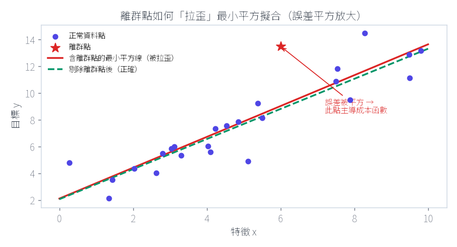
核心：誤差被「平方」放大，單一離群點主導整條擬合線。
🤖 AI 生圖可用：重繪此示意圖的提示詞（結構化）
WHAT: 帶一個離群點的散點圖，疊加兩條迴歸線——被離群點拉歪的紅線與只用乾淨點的綠虛線。
WHY: 平方誤差讓單一大誤差主宰代價函數，一個離群點就能把整條迴歸線拉歪。
An educational chart showing WHY a single outlier breaks least-squares regression, no generic bell curve only.
A scatter of blue data points roughly along an upward trend, plus ONE oversized red star far from the trend. Two regression lines are drawn: a RED line through all points (visibly tilted/pulled toward the outlier) and a GREEN dashed line through only the clean points (the correct trend).
An annotation: "squaring the error makes ONE large error dominate the total cost".
STYLE: clean scientific plot, white background, labeled axes x and y.
MUST show: (1) one clear outlier, (2) two contrasted regression lines (pulled vs correct).
AVOID: a bell curve with a red dot and no fitted lines.
5.2.2
前置處理②：資料正規化（Normalization）
▼
祕笈 教授祕笈：前置處理②：資料正規化（Normalization）為什麼要正規化？
不同特徵常有不同「數值範圍」。例如「收入」可能是百萬級，「年齡」只有幾十。若直接拿來算，數值大的特徵會偷偷主導成本函數 ，即使它其實沒那麼重要。
線性方法：Z-score 標準化
每個特徵套用「減平均、除標準差」，讓結果變成平均 0、變異數 1 ：
$$\hat{x}_{ik} = \frac{x_{ik} - \bar{x}_k}{\sigma_k}$$
其他的線性技巧則是把數值壓進 [0,1] 或 [-1,1] 範圍。
非線性方法：softmax scaling
當資料不是均勻分布在平均數兩側時，可用非線性函數把數值「擠」進指定區間。softmax 縮放：
$$y=\frac{x_{ik}-\bar{x}_k}{r\sigma_k},\qquad \hat{x}_{ik}=\frac{1}{1+\exp(-y)}$$
這個 sigmoid 型函數把值限制在 [0,1]。當 y 很小（資料離平均很近）時，它近似線性；離平均越遠，就被「指數擠壓」。參數 r 由使用者決定了線性區段的寬窄。
① 正規化前：軸尺度懸殊，大值特徵「綁架」距離
收入(0–1000)
年齡(0–10)
A B
幾乎水平 → 距離幾乎全由收入決定
② 正規化後：各軸等權，距離恢復「真實」
收入(標準化)
年齡(標準化)
A B
兩軸對距離貢獻接近
正規化的因果：大值特徵不成比例地主導距離
🤖 AI 生圖可用：重繪此示意圖的提示詞（結構化）
WHAT: 左右兩面板——正規化前兩點連線幾乎水平（貼近大尺度軸），正規化後連線呈對角線（兩軸等權）。
WHY: 數值範圍懸殊的特徵會不成比例地主導距離度量，正規化後才能反映「真實」的相似度。
An educational BEFORE/AFTER diagram showing WHY feature normalization matters, not just two empty boxes.
LEFT panel "before": a 2D scatter with two points A and B, where the x-axis is "income 0-1000" and y-axis is "age 0-10"; the dashed distance between A and B is drawn almost horizontal to emphasize that distance is dominated entirely by the large-scale income axis.
RIGHT panel "after": the same two points after standardization, both axes comparable, the dashed distance now reflects a balanced contribution of both features, labeled "each feature gets equal say".
STYLE: flat vector, white background, left neutral/right green.
MUST show: (1) wildly different axis scales, (2) a distance line whose slope changes between panels to reveal that scale distorts geometry.
AVOID: abstract before/after boxes with no geometry.
🧪 互動 Demo｜資料正規化：拖動資料點，看三種正規化如何改變尺度
📖 操作說明
做什麼 ：重現 5.2.2 的正規化——z-score（零均值單位變異）、min-max（映射到 $[0,1]$）、softmax（壓縮到 $(0,1)$）。輸入是資料點 ，由資料點即時算均值與變異再套用變換。怎麼操作 ：用滑鼠拖動任一資料點 （可把一個點拖到很遠當離群值），切換正規化方法、調 softmax 的 $r$。觀察什麼 ：上排是原始資料、下排是正規化後。拖一個離群值，看 min-max 會把其餘點擠到一側、而 z-score 較穩健；softmax 把資料壓縮進 $(0,1)$。正確基準 ：$\hat{x}_k=(x_{ik}-\bar{x}_k)/\sigma_k$（式 5.1 前）；min-max $\frac{x-\min}{\max-\min}$；softmax $\frac{1}{1+e^{-y}},\ y=\frac{x-\bar{x}}{r\sigma}$。正規化後 z-score 必為零均值單位變異。
✅ 理論基準：z-score 正規化後均值恆為 0、變異恆為 1；min-max 對單一離群值極度敏感。
正規化方法
z-score（零均值/單位變異）
min-max → [0,1]
softmax → (0,1)
softmax r（僅此方法）3.0
↺ 重置資料點
5.2.3
前置處理③：遺失值（Missing Data）
▼
祕笈 教授祕笈：前置處理③：遺失值（Missing Data）遺失值常出現在哪？
問卷調查有人沒回答、遙測區域只有部分感測器覆蓋、感測器網路資料融合缺漏……都會產生不完整的特徵向量。
傳統簡單做法（補值 imputation）
補 0
補「無條件平均數」（用該特徵現有值的平均）
補「條件平均數」（若有缺失值的 pdf 估計）
或直接丟掉 有缺失的向量（大資料才划算）
進階做法：從「條件分布」抽樣
想法是「尊重缺失值的統計本質」——不補一個平均數，而是從一個分布隨機抽一個值 。在「隨機遺失」（MAR，遺失機率與值本身無關）假設下，從下列條件分布抽樣：
$$p(\boldsymbol{x}_{mis} \mid \boldsymbol{x}_{obs};\boldsymbol{\theta}) = \frac{p(\boldsymbol{x}_{obs},\boldsymbol{x}_{mis};\boldsymbol{\theta})}{p(\boldsymbol{x}_{obs};\boldsymbol{\theta})}$$
參數 θ 通常先用觀測到的資料估計，經典工具是 EM 演算法 。
多重插補（MI）vs 單一插補（SI）
SI 只抽 1 個值，無法反映 θ 估計的不確定性。MI 則對每個缺失值抽 m > 1 個樣本，再適當地合併結果，把估計 θ 的不確定性也考慮進來。
缺失值 [3.2, ?, 5.1] 的三種補法與代價
補 0 或平均
快，但引入系統偏差
條件分布抽樣
保留分布形狀
多重插補 MI
抽 m 次反映不確定性
補「一個值」 vs 補「一個分布」
單點：假裝確定
分布：保留不確定
遺失值：「補單點」會假裝確定，「補分布」才誠實
🤖 AI 生圖可用：重繪此示意圖的提示詞（結構化）
WHAT: 左側三種補值策略列表，右側對比單一紅點（假裝確定）與綠色機率分佈陰影（保留不確定性）。
WHY: 單點補值假裝我們確知遺失值，但真實情況帶有不確定性，多重插補才誠實反映這一點。
An educational diagram contrasting imputation strategies by the principle "single value vs distribution", with a clear bias-variance message.
Left: three rows — "impute 0/mean: fast but biased", "draw from conditional distribution: keeps shape", "multiple imputation (m draws): reflects uncertainty".
Right: two panels — a single red dot on an axis labelled "single point: pretends certainty" versus a green shaded probability distribution labelled "a draw: preserves uncertainty".
STYLE: flat vector, white background, blue/orange/green.
MUST show: the certainty-vs-uncertainty contrast (a lone dot vs a spread distribution).
AVOID: a plain flowchart of method names with no statistical meaning.
5.3
峰值現象（Peaking Phenomenon）
▼
祕笈 教授祕笈：峰值現象 Peaking Phenomenon一個震撼的結論
直覺會以為「特徵越多，分類越準」，但事實有一個關鍵轉折。教科書用 Trunk 的例子嚴格證明：
若分布的 pdf 完全已知 ：特徵越多，錯誤率可以一路降到 0。
若 pdf 未知、參數必須用有限訓練資料估計 ：特徵一多，錯誤率反而飆到 0.5 （等於亂猜）。
「峰值現象」：實際中固定 N，特徵數 l 增加時，錯誤率先下降、到達一個「峰值」（最小值）後又反轉上升。
經驗法則
最小錯誤率大約發生在 l = N / α ，α 通常在 2～10 之間。也就是說：訓練資料少 → 特徵要少；訓練資料多 → 才能支撐更多特徵。
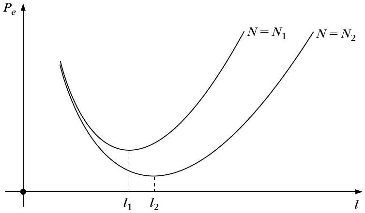
圖 5.1：固定 N，錯誤率先降後升；N 更大（N₂≫N₁）時，峰值往更多特徵的方向移動。
但 SVM 是例外
SVM 用 kernel 映射到高維（甚至無限維）空間，泛化卻依然好。原因在後面的 5.10 會揭示：真正控制泛化的不是參數數量，而是另一個量 （VC 維度 / 邊界）。
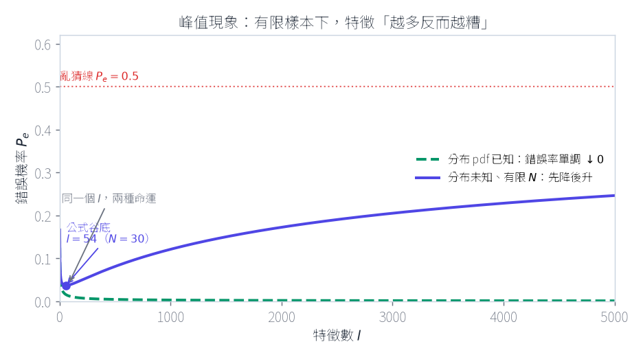
圖 5.1 深層呈現：兩條命運線在「有限樣本」處分岔 —— 特徵越多，分不清反而變 0.5。
🤖 AI 生圖可用：重繪此示意圖的提示詞（結構化）
WHAT: 雙曲線圖，橫軸特徵數 l、縱軸錯誤率 Pe：綠色虛線單調降到 0（已知 pdf），藍色實線先降後升趨近 0.5（未知 pdf、有限 N）。
WHY: 特徵越多不是越好——當機率密度需要從有限樣本估計時，過多特徵反而讓估計誤差主導、錯誤率回升。
A two-curve line chart that makes the "peaking phenomenon" VISUALLY OBVIOUS, with x-axis "number of features l" and y-axis "error probability Pe".
ONE green dashed curve DECREASES monotonically to near zero, labelled "if the pdf is KNOWN: error keeps dropping to 0".
A SECOND blue solid curve first DECREASES then INCREASES back toward a horizontal dotted line at Pe=0.5 labelled "random guessing 0.5", labelled "if pdf is UNKNOWN, finite N: error worsens again".
Mark the trough of the blue curve with a dot and label "peak / optimal l ≈ N/α".
STYLE: clean scientific plot, white background.
MUST show: (1) the divergence/fork between the two curves, (2) the blue curve's trough and its climb to 0.5.
AVOID: a single generic U-curve with no fork and no 0.5 reference line.
5.4.1
用「統計假設檢定」挑特徵
▼
祕笈 教授祕笈：用「統計假設檢定」挑特徵基本想法
先把每個特徵獨立 拿來看，快速淘汰明顯沒用的，把吃重的運算留給後面的精細技巧。核心是問：這個特徵在各類別中的值，差異顯不顯著？
寫成兩個假設：
H₁（對立假設） ：特徵值差異顯著 。H₀（虛無假設） ：特徵值差異不顯著 。
名詞速記：虛無假設 H₀ ＝「沒有差異」的預設立場；我們想蒐集證據去推翻它 。決策永遠伴隨犯錯機率。
檢定的四個步驟（已知變異數）
算出樣本平均 $\bar{x}$，再算檢定統計量 $q=\frac{\bar{x}-\hat{\mu}}{\sigma/\sqrt{N}}$ 。
選定顯著水準 $\rho$（例如 0.05）。
查表得接受區間 $D=[-x_\rho, x_\rho]$ （對應機率 $1-\rho$）。
若 $q\in D$ → 接受 H₀；否則拒絕 H₀（接受 H₁）。
「顯著水準 ρ」＝當 H₀ 其實成立時，我們卻誤判成拒絕的機率。它就是「錯殺無辜」的機率。
變異數未知時 → t 檢定
若 σ 未知，改用樣本變異數估計，檢定統計量變成：
$$q=\frac{\bar{x}-\mu}{\hat{\sigma}/\sqrt{N}}$$
此時 q 不再服從常態，而是服從 t 分布 （自由度 N−1），查 t 分布表。
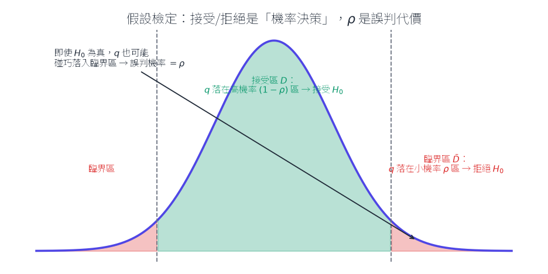
接受區(綠)與臨界區(紅)；即使 H₀ 為真，樣本也可能碰巧落進臨界區 —— 那就是 ρ。
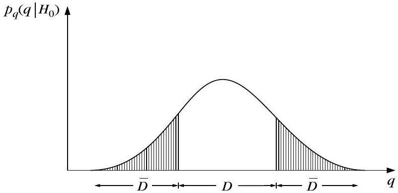
圖 5.2：假設檢定的接受域與臨界拒絕域，陰影面積為錯誤決策機率。
🤖 AI 生圖可用：重繪此示意圖的提示詞（結構化）
WHAT: 常態分布下的檢定統計量 q，中央區塊標示綠色接受區、兩側尾端標示紅色拒絕區。
WHY: 即使虛無假設為真，樣本仍可能因隨機性落入拒絕區——這個誤判機率正是顯著水準 ρ。
A statistical hypothesis-testing diagram with a normal distribution of test statistic q on the horizontal axis, no generic bell curve.
A central region between two dashed vertical lines is shaded GREEN labelled "accept region D: q falls here with probability 1-rho".
The two tails are shaded RED labelled "critical region: q falls here with probability rho".
An annotation arrow from inside the red tail states: "even if H0 is true, a sample can land here by chance — that misjudgment probability IS rho".
STYLE: clean scientific plot, white background, labeled axis q.
MUST show: (1) accept vs critical regions, (2) the probabilistic (not certain) nature of the decision.
AVOID: a shaded bell curve with no decision interpretation.
5.4.2
t 檢定應用於特徵選擇
▼
祕笈 教授祕笈：t 檢定應用於特徵選擇檢定「兩個類別的平均是否不同」
針對某個特徵，定義 $z = x - y$（兩類別的值相減），檢定：
$$H_1:\ \Delta\mu=\mu_1-\mu_2\neq 0,\qquad H_0:\ \Delta\mu=0$$
變異數未知時，檢定統計量：
$$q=\frac{(\bar{x}-\bar{y})-(\mu_1-\mu_2)}{s_z\sqrt{2/N}}$$
其中合併變異數 $s_z^2$ 用兩類樣本變異數加總。若兩類樣本數不同、或兩類變異數不同（用 F 檢定檢查 $\frac{\hat\sigma_1^2}{\hat\sigma_2^2}$ 是否接近 1），要稍作修正。
若 Gaussian 假設不成立，可用 Kruskal-Wallis 等無母數檢定替代。
這個特徵該留嗎？看兩類平均相差多少
ω₁
ω₂
平均差 Δμ
檢定統計量
q=(x̄−ȳ)/(s√(2/N))
q 落接受區 → 丟掉
q 落臨界區 → 保留
t 檢定：把「平均差」轉成「保留/淘汰」的決策
🤖 AI 生圖可用：重繪此示意圖的提示詞（結構化）
WHAT: 左圖兩個重疊鐘形曲線（藍 ω1、紅 ω2）與雙箭頭標示均值差，右圖把均值差除以標準誤畫成檢定量 q 的位置。
WHY: t 檢定把「均值差多大」重新校準成「相對於不確定性有多顯著」，這才是決定特徵去留的關鍵。
An educational diagram linking the t-test to a KEEP/DROP feature decision, no generic two-curve illustration.
Left: two overlapping bell curves (blue w1, red w2) with an orange double-headed arrow between their means labelled "mean difference".
Right: a decision axis showing the test statistic q=(xbar-ybar)/(s*sqrt(2/N)); a green dot inside the accept region labelled "drop this feature", a red dot in the critical region labelled "keep this feature".
STYLE: flat vector, white background, blue/orange/green.
MUST show: the explicit keep-vs-drop decision tied to where q falls.
AVOID: merely two distributions with no decision outcome.
5.5
ROC 曲線與 AUC
▼
祕笈 教授祕笈：ROC 曲線與 AUC平均數相同 ≠ 一定好分
t 檢定只看「平均數差多少」。但就算平均數差很大，若兩類的散布範圍互相重疊 ，一樣分不開。ROC 曲線就是來看「兩類重疊程度」的工具。
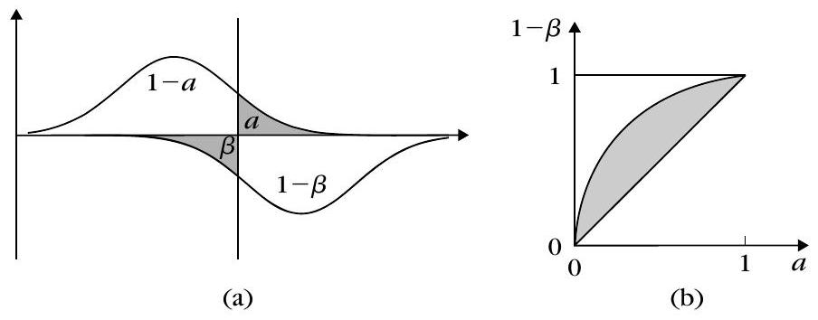
圖 5.3：(a) 兩類分布重疊，移動門檻會得到不同的 (a, β)。(b) 對應的 ROC 曲線。
門檻掃描 → ROC 曲線
用 a = 對 ω₁ 誤判的機率、β = 對 ω₂ 誤判的機率。
把門檻從左到右掃一遍，畫出 (a, 1−β) 的軌跡。
兩類完全重疊 → ROC 退化成 45° 對角線（a = 1−β）。
兩類完全分離 → 曲線貼著左上角，包住的面積最大。
曲線與對角線之間的面積，就是「類別分辨能力」的量度：完全重疊 = 0，完全分離 = 1/2（上方三角形的面積）。
AUC
ROC 曲線下面積（AUC）也可用來設計分類器：AUC 越大，平均而言分類性能越好 。
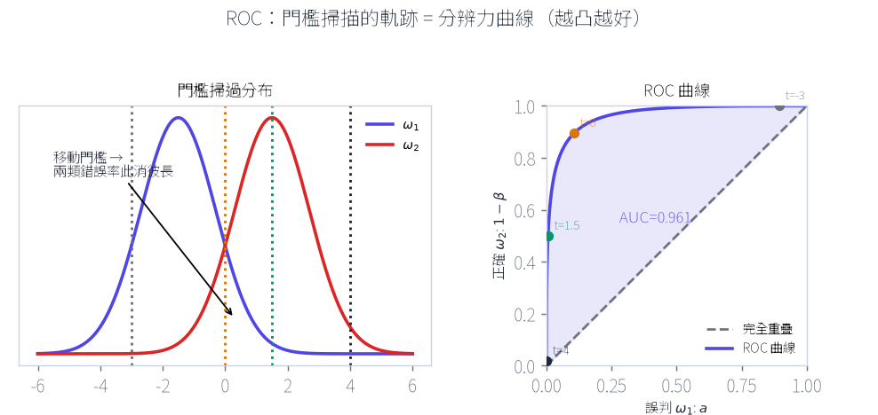
ROC 的因果：移動門檻 → 兩類錯誤率此消彼長 → 掃出「分辨力曲線」。
🤖 AI 生圖可用：重繪此示意圖的提示詞（結構化）
WHAT: 左圖兩重疊分布疊加多條門檻虛線，右圖 ROC 曲線上對應的多個 (α, 1−β) 點。
WHY: 移動門檻在兩類錯誤率之間此消彼長，ROC 曲線正是把這整條取捨軌跡畫成一條線。
A two-panel educational figure tying the ROC curve to threshold movement, not a standalone ROC plot.
LEFT panel: two overlapping distributions (blue and red) with several dashed vertical threshold lines at different positions, annotation "moving the threshold trades off the two class errors".
RIGHT panel: the corresponding ROC curve (TPR vs FPR) bowing toward the top-left with the AUC area lightly shaded.
STYLE: clean scientific, white background.
MUST show: the linkage between a moving threshold and a point sliding along the ROC curve.
AVOID: a bare ROC curve with no coupling to the threshold sweep.
5.6.1
類別可分離性①：Divergence（散度）
▼
祕笈 教授祕笈：類別可分離性① Divergence 散度動機：貝氏分類器靠什麼分辨？
貝氏分類依據後驗機率 $P(\omega_i\mid \boldsymbol{x})$。錯誤率取決於兩個後驗機率「差多少」。所以比值 $\frac{P(\omega_1\mid\boldsymbol{x})}{P(\omega_2\mid\boldsymbol{x})}$ 能傳達「這個特徵向量多能分辨兩類」的資訊。
散度的定義
取對數後對兩個類別分別取平均並相加：
$$d_{12}=D_{12}+D_{21}$$
$$D_{12}=\int p(\boldsymbol{x}\mid\omega_1)\ln\frac{p(\boldsymbol{x}\mid\omega_1)}{p(\boldsymbol{x}\mid\omega_2)}\,d\boldsymbol{x}$$
散度本質就是 Kullback-Leibler（KL）散度 的一種形式，衡量兩個機率分布「差多遠」。
性質
$d_{ij}\ge 0$，$d_{ij}=0$ 當 i=j，且 $d_{ij}=d_{ji}$（對稱）。
特徵彼此統計獨立時，散度可加總：$d_{ij}(x_1,\dots,x_l)=\sum_{r}d_{ij}(x_r)$
Gaussian 情況有封閉解（式 5.22），且若兩類共變異數相同，散度就是 Mahalanobis 距離 。
散度同時依賴「平均數差」與「變異數」，即使平均數相同、變異數差很多，散度仍可能很大（類別仍可分）。
小缺點 → 轉換散度
散度對平均數差太敏感，小幅變動可能造成散度大變、卻沒反映在錯誤率。因此提出轉換散度 減緩此問題：
$$\hat d_{ij}=2\left(1-\exp(-d_{ij}/8)\right)$$
重疊區：似然比≈1 → D₁₂(x)≈0
分離區：似然比很大 → D₁₂(x) 大
權重小
權重大
散度 = 對 ω₁ 分布「加權平均」各點的似然比 → 平均分辨力
散度：逐點的似然比，用分布加權平均成「平均分辨力」
🤖 AI 生圖可用：重繪此示意圖的提示詞（結構化）
WHAT: 兩條重疊機率密度曲線，在重疊區與分離區分別標示似然比與局部散度貢獻大小。
WHY: 散度不是單一數字憑空而來，而是把每個點的局部證據（相似區低權重、相異區高權重）加權平均出來的。
An educational diagram that makes "divergence = averaged per-point log-likelihood ratio" intuitive, no two-blob illustration.
Two overlapping curves (blue p(x|w1), red p(x|w2)) that are close in the overlap region and far apart elsewhere. Arrows point to the overlap region labelled "likelihood ratio ~1, so D12(x) ~0 (low weight)" and to the separated region labelled "likelihood ratio large, D12(x) large (high weight)". A bottom note: "divergence averages this per-point evidence using the class distribution".
STYLE: flat vector, white background.
MUST show: per-point evidence being weighted (near-zero in overlap, large where separated).
AVOID: just two ellipses and an arrow labelled "distance".
5.6.2
類別可分離性②：Chernoff 界與 Bhattacharyya 距離
▼
祕笈 教授祕笈：Chernoff 界與 Bhattacharyya 距離可達到的「最小錯誤率」的上界
貝氏分類器的最小錯誤率 $P_e$ 一般無法解析計算，但可用不等式 $\min[a,b]\le a^s b^{1-s}$ 導出上界：
$$P_e \le P(\omega_i)^s P(\omega_j)^{1-s}\int p(\boldsymbol{x}\mid\omega_i)^s p(\boldsymbol{x}\mid\omega_j)^{1-s}\,d\boldsymbol{x} \equiv \epsilon_{CB}$$
這個上界 $\epsilon_{CB}$ 就是 Chernoff 界 ，可對 s 最小化。
Bhattacharyya 距離
取 $s=1/2$ 得特例。對 Gaussian 分布，上界可寫成 $\epsilon_{CB}=\sqrt{P(\omega_i)P(\omega_j)}\exp(-B)$，其中 B 就是 Bhattacharyya 距離 ：
$$B=\frac18(\mu_i-\mu_j)^T\left(\frac{\Sigma_i+\Sigma_j}{2}\right)^{-1}(\mu_i-\mu_j)+\frac12\ln\frac{\left|\frac{\Sigma_i+\Sigma_j}{2}\right|}{\sqrt{|\Sigma_i||\Sigma_j|}}$$
B 有兩項：第一項看「平均數差」，第二項看「共變異數差」。所以連平均數相同、只靠變異數差異也能分離。且共變異數相同時，B 正比於 Mahalanobis 距離。
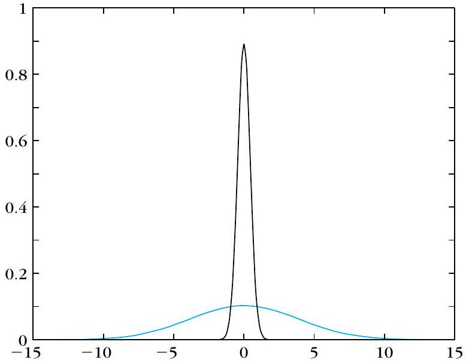
圖 5.4：平均數相同、變異數差異極大的兩個 Gaussian，仍可分辨。
反直覺：平均數相同，靠「變異數」差異也能分開
(a) 平均相同、變異不同
尖(藍) vs 扁(紅)
B 仍大 → 可分
(b) 平均不同、變異相同
靠平均差 → 可分
Bhattacharyya 兩項：平均差 + 變異差，缺一不可
Bhattacharyya：平均與變異是兩條獨立的分辨通道
🤖 AI 生圖可用：重繪此示意圖的提示詞（結構化）
WHAT: 雙面板：(a) 同均值不同變異的兩條曲線中心重合、(b) 標示 Chernoff 界如何仍給出非零可分性上界。
WHY: 反直覺之處——即使兩類均值完全相同，光靠變異數不同依然可分，Bhattacharyya/Chernoff 距離能捕捉到這一點。
An educational two-panel figure illustrating the COUNTERINTUITION that classes can be separated by variance alone, no generic overlapping curves.
Panel (a) "same mean, different variance": a tall narrow blue curve and a wide flat red curve CENTERED AT THE SAME POINT, annotated "variance alone still separates — B is large".
Panel (b) "different mean, same variance": two identical-width shifted curves annotated "mean difference separates".
Bottom note: "Bhattacharyya distance has two terms: mean-difference + covariance-difference".
STYLE: flat vector, white background.
MUST show: same-center but different-width curves in (a), making the counterintuition visible.
AVOID: two similar bell curves with no clear contrast of width vs center.
5.6.3
類別可分離性③：散布矩陣與 FDR
▼
祕笈 教授祕笈：散布矩陣與 FDR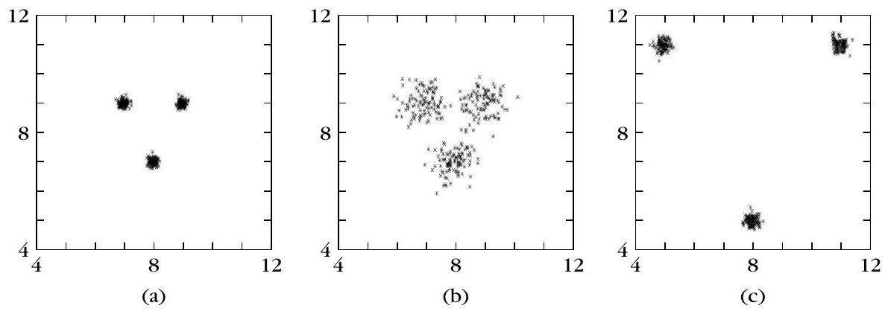
圖 5.5：三種不同類內變異與類間距離的分佈對比（(c) 最優，(b) 最差）。
三個散布矩陣
類內散布（Within-class） $S_w=\sum_i P_i\Sigma_i$ → 各類「內部」的變異總和。類間散布（Between-class） $S_b=\sum_i P_i(\mu_i-\mu_0)(\mu_i-\mu_0)^T$ → 各類平均離「全局平均」多遠。混合散布（Mixture） $S_m=E[(x-\mu_0)(x-\mu_0)^T]$ ，且 $S_m=S_w+S_b$ 。
口訣：類內要小（越集中）、類間要大（越分開） 。這呼應了本章開頭的目標。
由它們組成的判據
$$J_1=\frac{\operatorname{trace}\{S_m\}}{\operatorname{trace}\{S_w\}},\quad
J_2=\frac{|S_m|}{|S_w|}=|S_w^{-1}S_m|,\quad
J_3=\operatorname{trace}\{S_w^{-1}S_m\}$$
$J_2$、$J_3$ 對線性轉換不變 ，後面會用它來最佳化產生特徵。
FDR（Fisher 判別比）
一維兩類特例（等機率）下，$\left|S_w\right|$ 正比於 $\sigma_1^2+\sigma_2^2$、$|S_b|$ 正比於 $(\mu_1-\mu_2)^2$，相除得：
$$\text{FDR}=\frac{(\mu_1-\mu_2)^2}{\sigma_1^2+\sigma_2^2}$$
FDR 用「平均數差」比「變異數和」，常用來量化單一特徵的分辨力。
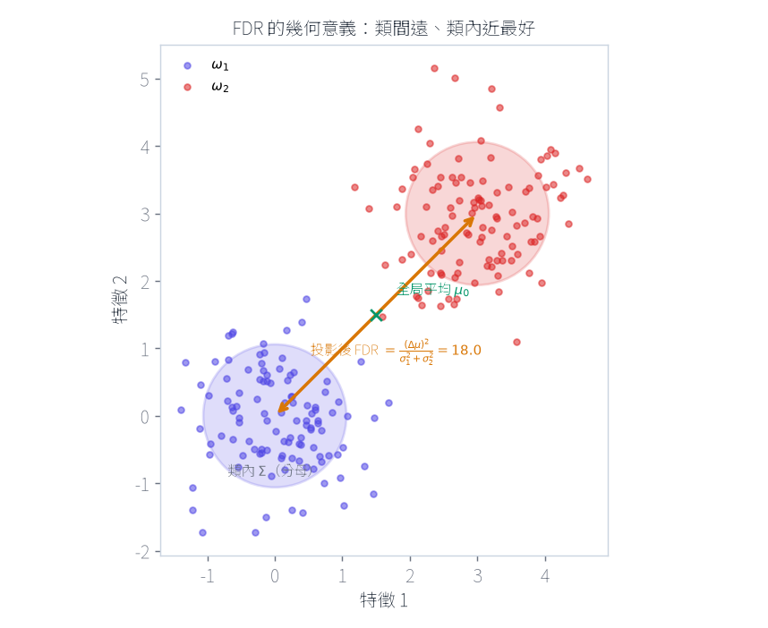
FDR 的分子（類間距離）與分母（類內散布）在幾何上的對應，即散布矩陣 S_b 與 S_w。
🤖 AI 生圖可用：重繪此示意圖的提示詞（結構化）
WHAT: 兩群散點各自帶共變異橢圓（類內散布），雙箭頭連接兩群中心（類間距離），十字標示全局均值。
WHY: FDR 的分子分母不是抽象符號，而是「中心距多遠」除以「各自散布多開」的具體幾何量。
An educational 2D scatter figure making the FDR numerator/denominator GEOMETRICALLY concrete, no formula text alone.
Two clusters of points (blue class w1, red class w2) each with a covariance ellipse drawn around it (the "within-class spread", denominator). An orange double-headed arrow connects the two cluster centers labelled "between-class distance (numerator)". A green cross marks the global mean mu0.
Caption conveys FDR=(mu1-mu2)^2/(sigma1^2+sigma2^2): maximize the arrow, minimize the ellipses.
STYLE: clean scientific scatter, white background, equal aspect.
MUST show: (1) per-class covariance ellipses, (2) the inter-centroid arrow, (3) global mean.
AVOID: a bare formula with two abstract circles.
5.7.1
特徵子集選擇（Feature Subset Selection）
▼
祕笈 教授祕笈：特徵子集選擇（Feature Subset Selection）問題：從 m 個特徵挑 l 個
前面定義了各種判據後，核心問題來了：從 m 個原特徵裡，選出 l 個最好的。 有兩大方向：
方向一：標量式（單看每個特徵）
對每個特徵算判據 C(k)，照 C 值排序，取前 l 個。優點是計算簡單 ；缺點是忽略特徵間的相關性 。
改良：選下一個特徵時，同時考慮「判據值」與「與已選特徵的相關係數」，用加權組合 $\alpha_1 C(j)-\alpha_2|\rho|$ 來挑。
方向二：向量式（看特徵組合）
考慮整組特徵向量的分辨力，又分兩種：
Filter（過濾法） ：用可分離性判據選特徵，與最終分類器無關 。所有組合數 $\binom{m}{l}$，m=20、l=5 就有 15,504 種，很貴。Wrapper（包裝法） ：直接拿「分類器實際表現」當判據，每種組合都訓練一次分類器，挑錯誤率最低的。更準但更慢 。
窮舉太貴，所以發展出一堆搜尋技巧 ：有的是次佳（貪婪），有的在特定條件下保證最佳（分支定界）。下面會講。
關鍵差異：Wrapper 有「訓練→評估」回饋迴圈，Filter 沒有
Filter（過濾法）
算判據 J
排序→選 l
一氣呵成，不碰分類器
Wrapper（包裝法）
候選子集
訓練分類器
看準確率
回饋迴圈：換子集再試（慢但準）
Filter 一次選完；Wrapper 透過分類器表現回饋反覆挑選
🤖 AI 生圖可用：重繪此示意圖的提示詞（結構化）
WHAT: 兩條並列流程——filter（一次性計算判據→排序→挑選，無迴圈）與 wrapper（候選子集→分類器評估→回饋調整，含迴圈）。
WHY: 兩者的關鍵差異不是「準不準」，而是 wrapper 會把分類器表現回饋進搜尋迴圈，filter 完全不會。
An educational comparison that reveals the KEY structural difference between filter and wrapper feature selection, no two static boxes.
FILTER path (blue): criterion computation → sort → pick features, a straight one-shot pipeline with no loop, labelled "never touches the classifier".
WRAPPER path (green): candidate subset → train classifier → evaluate accuracy → an orange feedback arrow loops back to try another subset, labelled "feedback loop: retrain per subset (slower but more accurate)".
STYLE: flat vector flowchart, white background, blue/green/orange.
MUST show: the presence of a feedback loop in Wrapper and its absence in Filter.
AVOID: two labelled boxes with arrows and no loop/feedback contrast.
5.7.2
特徵搜尋技巧：前向 / 後向 / 浮動 / 最佳
▼
祕笈 教授祕笈：特徵搜尋技巧：前向 / 後向 / 浮動 / 最佳向後選擇（Sequential Backward）
從「全部 m 個」開始，每一步丟掉一個 ，讓剩下的組合判據最好，直到剩 l 個。
向前選擇（Sequential Forward）
反過來，從「空」開始，每一步加一個 最好的，直到湊滿 l 個。
兩者都有「巢狀效應 （nesting）」：向後法一旦丟掉就再也撿不回來；向前法一旦選中就再也丟不掉。這是缺點。
浮動搜尋（Floating Search）
解決巢狀效應：允許「回頭」。可以在加入後再回頭剔除、在剔除後再回頭加回，得到比純貪婪更好的結果。
最佳搜尋（Optimal）
當判據具單調性 （加特徵不會變差）時，可用分支定界（branch and bound） 或動態規劃，找到最佳解且不用窮舉全部。
反直覺：貪婪法「回不了頭」，浮動搜尋能回頭補救
全部特徵
丟 x₃
丟 x₁
死胡同
已丟的撿不回（巢狀效應）
浮動搜尋
回頭加/刪
浮動搜尋：允許回頭，打破貪婪法的巢狀效應
🤖 AI 生圖可用：重繪此示意圖的提示詞（結構化）
WHAT: 一棵被剪枝的搜尋樹，紅色虛線箭頭從某節點指回根部標示「一旦刪除就回不去了」。
WHY: 貪婪式前向/後向搜尋一旦做出局部決定就無法反悔（巢狀效應），浮動搜尋則允許重新加入被刪掉的特徵來修正。
An educational diagram about the "nesting effect" in greedy feature search and how floating search fixes it, no simple flowchart.
A search tree whose branches are pruned; a red dashed arrow from a chosen node back toward the root is labelled "once dropped, it can never be re-added (nesting effect)".
A separate green panel shows floating search with a bidirectional orange dashed arrow looping back, labelled "can re-add or re-remove", clearly able to revisit earlier decisions.
STYLE: flat vector, white background, blue/red/green/orange.
MUST show: the one-way dead-end (greedy) vs the reversible loop (floating).
AVOID: boxes "backward"/"forward" with arrows only.
5.8
最佳特徵生成：Fisher 線性判別（LDA）
▼
祕笈 教授祕笈：Fisher 線性判別（LDA）從「被動挑」到「主動造」
前面都是「被動」用判據衡量既有特徵。LDA 則主動製造 新特徵：把 m 維的原向量，投影到一個方向 w，得到一維新特徵 $y=\boldsymbol{w}^T\boldsymbol{x}$ （忽略縮放）。
找最佳投影方向
目標：投影後「類間越遠、類內越擠」越好，也就是最大化 FDR：
$$\text{FDR}(\boldsymbol{w})=\frac{\boldsymbol{w}^T S_b\boldsymbol{w}}{\boldsymbol{w}^T S_w\boldsymbol{w}}$$
這是廣義 Rayleigh 商 ，最大值出現在：
$$S_b\boldsymbol{w}=\lambda S_w\boldsymbol{w}$$
兩類時可解得最佳方向：
$$\boldsymbol{w}=S_w^{-1}(\boldsymbol{\mu}_1-\boldsymbol{\mu}_2)$$
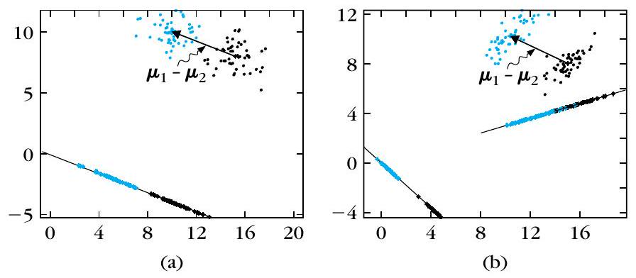
圖 5.6：當共變異數非球形（b），最佳投影方向不再平行於 μ₁−μ₂，而會配合資料分布形狀調整。
驚喜：當兩類是「同共變異數的 Gaussian」時，Fisher 方向等價於貝氏分類器（差一個門檻）。也就是說 LDA 同時完成了「特徵生成 + 分類器設計」。
多類別推廣
多類時用線性轉換 $\boldsymbol{y}=A^T\boldsymbol{x}$，最大化 $J_3$。最後化簡為特徵值問題 $(S_{xw}^{-1}S_{xb})C=CD$。因 $S_b$ 秩為 M−1，最多只能產生 M−1 個非零特徵值 （即 M 類問題至少需 M−1 個判別函數）。
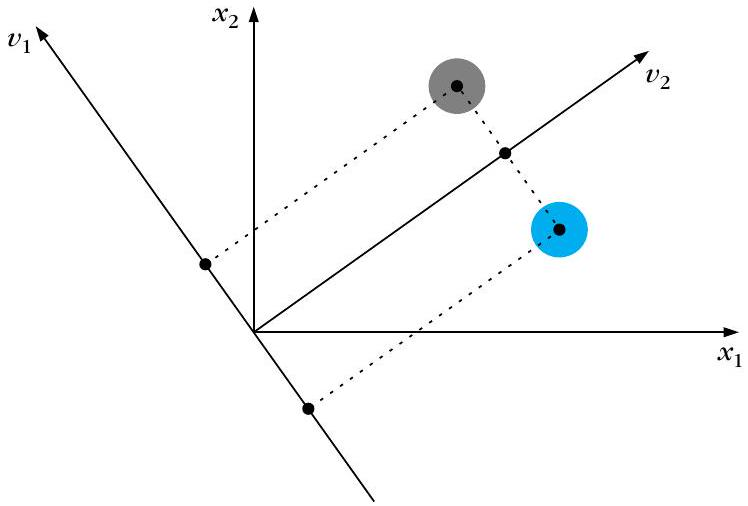
圖 5.7：投影至第一主特徵向量方向無資訊損失，投影至正交方向則完全重疊。
μ₁−μ₂ 方向（直覺但錯）
Fisher 方向 w
順資料形狀傾斜 → 投影後分最開
Fisher LDA：非球形資料下，最佳方向偏離 μ₁−μ₂
🤖 AI 生圖可用：重繪此示意圖的提示詞（結構化）
WHAT: 非球形資料橢圓疊加灰色虛線（μ1−μ2 連線）與綠色實線（Fisher 方向 w），兩線明顯不重合。
WHY: 直覺會以為最佳投影方向就是兩均值連線，但當類內散布非球形時，Fisher 方向會依資料形狀偏轉、避開散亂的方向。
An educational geometric figure explaining WHY the Fisher LDA direction is NOT parallel to the mean-difference line when the data is non-spherical, no orthogonal projection cartoon.
Two tilted ellipsoidal clusters (blue w1, red w2) with the same elongated orientation. A gray dashed line connects the two cluster centers, labelled "mean-difference direction (intuitive but wrong)". A green solid line titled to follow the clusters' elongation is labelled "Fisher direction w: tilts to fit data shape, best separates after projection".
STYLE: flat vector, white background.
MUST show: the misalignment between the mean-difference line and the correct projection direction.
AVOID: a generic projection diagram with perpendicular dashed lines.
🧪 互動 Demo｜Fisher LDA：拖動資料點，看投影方向的「最佳」如何隨資料形狀改變
📖 操作說明
做什麼 ：重現式 (5.39) $\mathbf{w} = S_w^{-1}(\boldsymbol{\mu}_1-\boldsymbol{\mu}_2)$。輸入是資料點 ，由資料點算出 $S_w$、$\boldsymbol{\mu}_1$、$\boldsymbol{\mu}_2$，再解出 Fisher 方向 $\mathbf{w}$。怎麼操作 ：用滑鼠拖動任一個資料點 （藍色 $\omega_1$、紅色 $\omega_2$），或按「重置」還原。觀察什麼 ：綠色線為 Fisher 方向 $\mathbf{w}$，灰色虛線為 $\boldsymbol{\mu}_1-\boldsymbol{\mu}_2$ 連線。當你把兩類「拉成沿某方向細長」時，$\mathbf{w}$ 會順著資料形狀偏離 $\boldsymbol{\mu}_1-\boldsymbol{\mu}_2$ 連線；當資料呈球形時兩線重合。正確基準 ：$\mathrm{FDR} = \frac{\mathbf{w}^T S_b \mathbf{w}}{\mathbf{w}^T S_w \mathbf{w}}$；$\mathbf{w}=S_w^{-1}(\boldsymbol{\mu}_1-\boldsymbol{\mu}_2)$ 使 FDR 最大。右下角顯示即時算出的 $\boldsymbol{\mu}_1$、$\boldsymbol{\mu}_2$、$S_w$、$\mathbf{w}$ 與 FDR。
✅ 理論基準：$\mathbf{w} = S_w^{-1}(\boldsymbol{\mu}_1-\boldsymbol{\mu}_2)$，其中 $\boldsymbol{\mu}_1,\boldsymbol{\mu}_2$ 為兩類樣本均值、$S_w$ 為類內散布（等機率時 $=\frac{1}{2}(\Sigma_1+\Sigma_2)$）。僅當 $S_w \propto I$ 時 $\mathbf{w} \parallel (\boldsymbol{\mu}_1-\boldsymbol{\mu}_2)$。
↺ 重置資料點
拖動藍/紅資料點（各自所屬類別固定），Fisher 方向即時重算。
小樣本問題（SSS）
當 N < m 時 $S_w$ 可能不可逆（奇異）。解法：用偽逆 $S_w^+$ 、正則化 $S_w+\sigma\Omega$ 、或先 PCA 降維再做 LDA（即 PCA+LDA）。
5.9
神經網路與特徵產生/選擇
▼
祕笈 教授祕笈：神經網路與特徵產生/選擇自聯想網路（Auto-associative）
一個 m 輸入、m 輸出、隱藏層只有 l 個節點（線性激活）的網路，訓練時「輸出 = 輸入」。訓練好後，隱藏層輸出就是「把 m 維投影到 l 維子空間」的結果（本質上等同主成分分析 PCA 的投影）。
非線性推廣
用三個隱藏層（[Kram 91]）可做非線性主成分分析 ，但代價是要用非線性最佳化、可能掉進局部極小。
LS 成本函數的另一個性質
一個多層感知器（線性輸出、最小平方訓練以逼近類別標籤）其實是在最大化 $J=\operatorname{trace}\{S_m^{-1}S_b\}$。也就是說，這個網路可視為一個「J 最佳的非線性轉換器」。
剪枝也是一種特徵選擇
神經網路剪枝：不重要特徵對應的輸入權重會趨近 0，配合正則化可讓它們真的歸零並被移除——等於把「特徵選擇」整合進分類器設計。
輸入 m 維
輸出 m 維
瓶頸 l 維
輸出 = 輸入
(自編碼)
瓶頸被迫保留
最關鍵 l 維
= 降維特徵
自聯想網路：資訊被迫通過窄瓶頸，瓶頸就是降維特徵
🤖 AI 生圖可用：重繪此示意圖的提示詞（結構化）
WHAT: 自編碼器拓樸圖，輸入層寬、中間瓶頸層窄、輸出層寬，箭頭從寬收窄再放寬。
WHY: 輸出被迫重建輸入，但資訊必須先擠過窄瓶頸——這個「擠壓」強迫網路只保留最關鍵的 l 維資訊，等同做了特徵萃取。
An educational diagram of an autoencoder that emphasizes the INFORMATION BOTTLENECK mechanism, not a plain neural network.
A neural network with m input nodes on the left, m output nodes on the right, and a SINGLE narrow hidden "bottleneck" layer of l nodes in the middle (clearly fewer). Arrows funnel from wide to narrow to wide. A side note: "output = input (autoencoding); the bottleneck is FORCED to keep only the most essential l dimensions = the reduced features".
STYLE: flat vector, white background, blue with a red-highlighted bottleneck.
MUST show: the wide→narrow→wide funnel and the compression-forcing constraint.
AVOID: a generic MLP layer diagram without the bottleneck emphasis.
5.10
泛化理論：VC 維度與 SRM
▼
祕笈 教授祕笈：泛化理論：VC 維度與 SRM經驗錯誤 vs 真實錯誤
分類器在「訓練資料」上的錯誤叫經驗錯誤 $P_e^N(f)$，可能做到 0（死背）。但我們真正在意的是「在新資料」上的真實/泛化錯誤 $P_e(f)$。泛化好了，兩者才會接近。
VC 維度（容量）
Vapnik-Chervonenkis 定理用「shatter coefficient」與「VC 維度 $V_c$」來刻畫一個分類器家族「有多能亂分」。直覺：
VC 維度是「能被這個分類器家族完全打散（shatter）的最大點數」。
二維空間的單一感知器 VC 維度 = 3；一般 l 維感知器 = l+1。
VC 維度可視為分類器的內在容量 ：訓練點數要遠大於它，泛化才會好。
VC 界給出「機率保證」：$P_e(f)\le P_e^N(f)+\phi(V_c/N)$。右邊第二項是「複雜度懲罰」，$V_c$ 越大懲罰越重。這呼應 PAC（Probably Approximately Correct）學習。
結構風險最小化（SRM）
糾結：模型太簡單 → 經驗錯誤大（欠擬合）；模型太複雜 → 懲罰大（過擬合）。SRM 的做法是：
用一組「嵌套」的模型類別 $\mathcal F^{(1)}\subset\mathcal F^{(2)}\subset\cdots$（VC 維度遞增）。
每個類別各找一個經驗錯誤最小的模型。
最後選「保證錯誤界 $\tilde P_e=P_e^N+\phi(V_c/N)$」最小的那個。
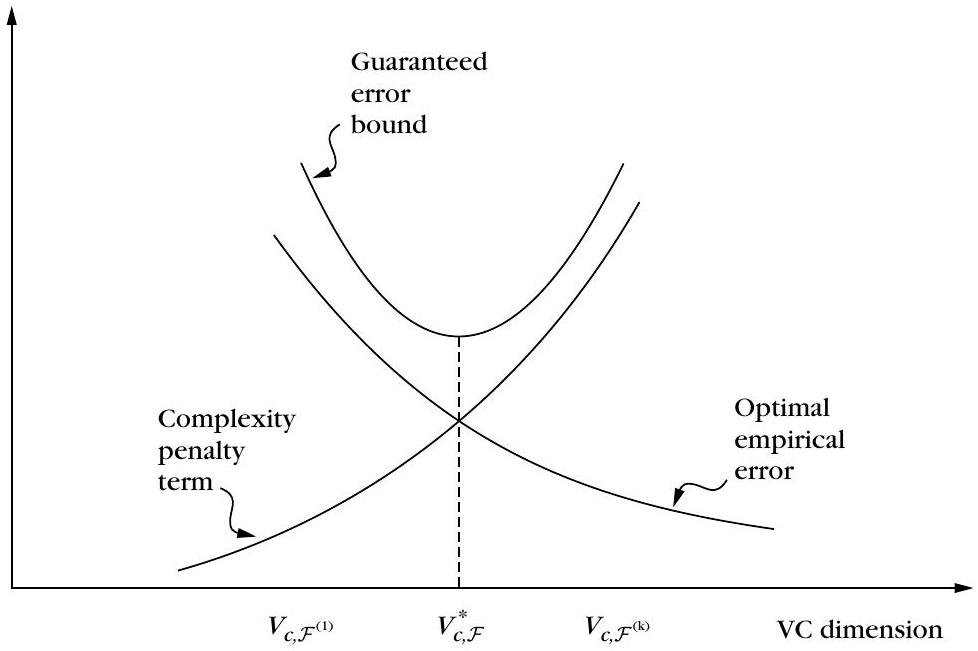
圖 5.9：SRM 原理：經驗錯誤下降與複雜度懲罰上升，極小點對應最佳模型容量。
這樣在「經驗錯誤」與「複雜度」之間取得最佳平衡，且當 $N\to\infty$ 能逼近貝氏最優。
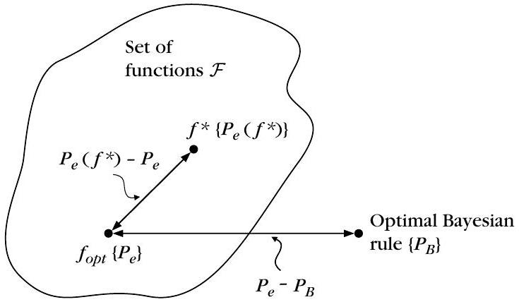
圖 5.8：總誤差 = (f* 與類內最佳 f_opt 的差距) + (f_opt 與貝氏 P_B 的差距)，兩個衝突項。
SVM 的「脫鉤」
SVM 的驚人之處：其泛化能力可與特徵空間維度無關 ，只受「邊界（margin）」控制。VC 維度上界 $V_c\le\min(r^2 c, l)+1$，最小化 $\|\boldsymbol{w}\|$（即最大化邊界）就等於在壓低 VC 維度——SVM 其實就在實踐 SRM 精神。
模型複雜度(VC 維度) 增加 →
經驗錯誤 ↓
複雜度懲罰 φ(Vc/N) ↑
保證錯誤界（真U型：先降後升）
最優點（谷底）
反直覺：控制泛化的不是參數數，是容量(VC)
SRM：經驗錯誤與複雜度懲罰的 U 型取捨，VC 才是真正容量
🤖 AI 生圖可用：重繪此示意圖的提示詞（結構化）
WHAT: 三條曲線疊圖——紅色遞減（經驗錯誤）、藍色遞增（複雜度懲罰）、綠色先降後升的真正 U 形（保證錯誤界總和），谷底標示最優點。
WHY: 控制泛化能力的不是參數數量，而是模型容量（VC 維度）；U 型谷底才是經驗誤差與複雜度懲罰的最佳取捨點。
An educational plot of structural risk minimization with clear two-term decomposition, not a bare U-curve.
x-axis "model complexity (VC dimension) increase", y-axis "error". A DECREASING red curve "empirical error", an INCREASING blue curve "complexity penalty phi(Vc/N)", and their SUM as a U-shaped green curve with its minimum marked "optimal point (SRM)".
A headline note: "counterintuition: what controls generalization is CAPACITY (VC dimension), NOT the raw number of parameters".
STYLE: clean scientific plot, white background.
MUST show: the two opposing curves AND their sum's minimum.
AVOID: a single U-curve with no decomposition into its two terms.
5.11
貝氏資訊準則（BIC）｜模型選擇
▼
祕笈 教授祕笈：貝氏資訊準則（BIC）SRM 的「貝氏版」
BIC（又稱 Schwartz 準則）從貝氏角度選模型：選「後驗機率 $P(\mathcal M_m\mid\mathcal D)$ 最大」的模型。經 Laplace 近似與取對數後，目標變成最小化：
$$\text{BIC} = -2L(\hat\theta_m) + K_m\ln N$$
第一項 $-2L$：模型對資料的擬合度 （對數似然取負，越小越好）。
第二項 $K_m\ln N$：複雜度懲罰 （$K_m$ = 自由參數數，N = 樣本數）。
BIC 是漸近一致 的：若候選模型家族包含了真模型，當 N→∞，選中正確模型的機率趨近 1。
與 AIC 的差別
AIC 的第二項是 $2K_m$（不乘 ln N）。實務觀察：N 大時 AIC 傾向選太複雜的模型；N 小時 BIC 傾向選太簡單的模型。
模型複雜度(參數 K) 增加 →
擬合項 −2L ↓
懲罰 K·ln N ↑
AIC 懲罰 2K（較緩）
BIC 懲罰 K·ln N（較陡）
N 大時懲罰重：BIC 選較簡模型；AIC 反之
BIC vs AIC：複雜度懲罰斜率不同，導致選模偏好不同
🤖 AI 生圖可用：重繪此示意圖的提示詞（結構化）
WHAT: 橫軸模型複雜度、縱軸準則值，遞減的擬合項曲線疊加兩條不同斜率的遞增懲罰線（BIC 用 K·ln N 較陡、AIC 用 2K 較平）。
WHY: BIC 與 AIC 差別不在公式長相，而在懲罰項隨樣本數 N 的成長速度不同，導致樣本多時 BIC 更傾向選簡單模型。
An educational figure explaining BIC and AIC through their DIFFERENT complexity-penalty slopes, no mere formula box.
x-axis "model complexity (parameters K) increase", y-axis "criterion value". A decreasing red curve "fit term -2L", an increasing blue curve "penalty K·ln N" (steeper, labelled BIC), and a shallower dashed blue line "penalty 2K" (labelled AIC). A note: "larger N → heavier penalty → BIC prefers simpler models; AIC, with constant 2K, tends to pick more complex ones for large N".
STYLE: clean scientific plot, white background.
MUST show: two different penalty slopes (K·ln N vs 2K) and their effect on model preference.
AVOID: only writing the formula in boxes.
📌
全章總結：一張圖看懂
▼
祕笈 教授祕笈：全章總結：一張圖看懂這一章的完整脈絡，可以這樣記：
先清資料 ：剔除離群點 → 正規化 → 處理遺失值。（5.2）了解代價 ：特徵不是越多越好（峰值現象）。（5.3）量測「特徵好不好」 ：t 檢定、ROC/AUC、散度、Bhattacharyya、散布矩陣/FDR。（5.4–5.6）動手挑特徵 ：標量式 vs 向量式（Filter/Wrapper），配上前向/後向/浮動/最佳搜尋。（5.7）自己造特徵 ：Fisher LDA 線性投影（5.8）、神經網路（5.9）。理論支撐 ：VC 維度、SRM 告訴你「容量 vs 樣本數」才是關鍵；BIC 提供貝氏式模型選擇。（5.10–5.11）
一句話貫穿全章：「用最少的特徵，保留最多的類別分辨力」 ，而正確的取捨由「樣本數 N 與模型容量」的關係決定。
教授祕笈：為什麼要「挑」特徵？特徵選擇的動機與取捨
同學好！歡迎來到《模式識別》第五章——特徵選擇（Feature Selection）！
在前面的章節中，我們學過了各種厲害的分類器（貝氏分類器、線性分類器、神經網路、非線性 SVM 等）。大家在學習時，往往預設了「資料特徵已經準備好擺在桌上」。
但來到這一章，我們要問一個直擊靈魂的問題：「桌上擺著 1000 個特徵，我們真的應該通通把它們塞進分類器裡嗎？」
答案是：千萬不要！特徵絕對不是包山包海、越多越好！ 今天這堂課，老師要帶大家看懂機器學習中最經典的困境，以及為什麼「懂得挑選與捨棄」才是頂尖工程師的核心功力。
主線比喻：長途自助旅行的打包行李箱
為了讓大家一眼看出特徵選擇的本質，我們整堂課用「長途自助旅行打包行李」 做主線比喻：
以為什麼都要帶的初學者 ：
你要去歐洲自助旅行一個月，擔心冷帶了羽絨衣、擔心熱帶了短袖、擔心下雨帶了雨鞋、還帶了電鍋、吹風機、三本大辭典……把 1000 件裝備通通塞進行李箱（高維度特徵）。
結果如何？行李箱重到拉不動（計算複雜度爆表），而且在機場海關找護照時，你得在一堆亂七八糟的衣服裡翻半天（無關特徵干擾判斷），最後搞到班機延誤！懂得特徵選擇的大師 ：
大師只帶最核心的幾件多功能穿搭與護照錢包（精選特徵子集）。行李輕巧、過關極快，而且面對各種突發狀況都能靈活應變（強大的泛化能力）！
鷹架式拆解：為什麼特徵多反而害了模型？
我們用三層鷹架，把「特徵太多」的三大罪狀拆解清楚：
1. 第一罪：計算複雜度暴增（Computational Complexity）
當特徵數量 $l$ 從 10 增加到 1000 時，矩陣相乘與求逆矩陣（如 $\Sigma^{-1}$ 或 $S_w^{-1}$）的計算量會呈二次甚至三次次方暴增（$O(l^2)$ 到 $O(l^3)$），讓電腦直接卡死。
2. 第二罪：冗餘特徵（Redundant Features）徒增負擔
假設你測量了個人的「身高（公分）」與「身高（吋）」。這兩個特徵單獨看都很有區分力，但合在一起完全沒有帶來任何新資訊 ！把它們通通塞進特徵向量，只會讓權重矩陣變得高度相關、甚至引發奇異矩陣危機。
3. 第三罪：泛化能力崩塌（The $N/l$ 比例危機）
這是最致命的一點！假設你的分類器有權重參數需要估計。根據 Fine [Fine 83] 的經驗法則與理論研究，為了讓分類器擁有良好的泛化能力（Generalization Property） 與穩健的誤差估計，訓練樣本數 $N$ 與特徵維度 $l$ 的比例 $\frac{N}{l}$ 至少要達到 10 到 20 以上！
如果你的訓練樣本 $N$ 是固定的，特徵數 $l$ 開得太大，$\frac{N}{l}$ 比例急劇下降，模型就會開始死記硬背訓練集的雜訊，陷入嚴重的過擬合！
懸念機關：雙倍強大的錯覺
在看數字例子之前，請大腦搶先思考一個反轉問題：
懸念思考 ：假設我們有兩個特徵 $x_1$ 與 $x_2$。單獨用 $x_1$ 分類正確率高達 90%，單獨用 $x_2$ 正確率也高達 90%。
請猜猜看：如果把 $x_1$ 與 $x_2$ 組合起來變成 2D 特徵向量 $[x_1, x_2]^T$，分類正確率一定會大幅提升到 98% 嗎？
答案揭曉 ：完全不一定！甚至可能完全沒提升！
如果 $x_1$ 與 $x_2$ 的高度相關係數接近 1.0（例如兩者只是單位不同的同一種物理量），組合後的特徵向量完全沒有提供新的類別分隔資訊！模型多付出了雙倍的計算代價，卻只拿到了零效益。這就是為什麼我們必須做特徵選擇！
真的算一遍：$N/l$ 比例與醫療診斷情境範例
我們用一個具體的醫療診斷情境，來定量驗證 $\frac{N}{l}$ 比例對模型的影響：
情境設定
假設某醫院進行罕見基因疾病診斷，受限於病例稀少，我們手頭只有 $N = 50$ 筆病人資料 。
生物晶片檢測技術一次性提供了 $l = 1000$ 個基因表達特徵 。
數值對比分析
策略方案
特徵數 $l$
樣本數 $N$
$\frac{N}{l}$ 比例值
經驗規則門檻 ($\ge 10 \sim 20$)
判定結果與模型命運
方案 A：未做特徵選擇（全選） $1000$
$50$
$\frac{50}{1000} = \mathbf{0.05}$
遠低於 10
崩潰！ 參數過多，模型強行擬合雜訊，真實測試集錯誤率高達 50%（如同亂猜）。
方案 B：經過特徵選擇（精選） $5$
$50$
$\frac{50}{5} = \mathbf{10.00}$
達標 ($\ge 10$)
成功！ 剔除 995 個雜訊基因，保留 5 個核心基因，模型泛化能力優異且穩健。
數值解讀 ：
方案 A 的 $\frac{N}{l} = 0.05$，代表平均每個特徵分不到 0.05 筆數據來估計，統計上極度不穩定；而方案 B 經過特徵選擇將維度降至 $l = 5$，$\frac{N}{l} = 10$ 剛好踏入穩健估計的門檻！
舉一反三：換你來試試看
假設你正在開發一個電商使用者購買意願預測模型，目前有 $N = 2000$ 筆歷史交易紀錄。
請你動筆算算看：
1. 若要符合 Fine 的經驗法則（$\frac{N}{l} \ge 20$），你的模型最多應該保留多少個特徵 $l$？
2. 如果資料科學團隊一口氣收集了 $l = 500$ 個特徵，當前的 $\frac{N}{l}$ 比例是多少？是否需要進行特徵選擇？
大家最容易在這裡搞混
以為「特徵選擇」只是為了讓程式跑快一點 ：
大家常在這裡搞混，以為刪特徵純粹是節省 CPU 時間。事實上，特徵選擇更核心的目的是提高模型的泛化能力（防過擬合） ，避免無關雜訊破壞決策邊界。混淆「特徵選擇（Feature Selection）」與「特徵產生（Feature Generation）」 ：
特徵選擇是在既有的特徵集合中「做減法（選出子集）」 ；而特徵產生（或特徵抽取，如 PCA、隱藏層轉換）則是將原始特徵做線性或非線性組合「生成新空間」 。
掛勾已知與收尾
特徵選擇的動機直接貫穿了整章的理論：
在接下來的課程中，我們將會學到 KP-5 （峰值現象，Peaking Phenomenon，展示特徵過多時錯誤率反彈的曲線）、KP-12 （特徵子集選擇）與 KP-16 （VC 維度與 SRM 泛化理論）。所有的技巧，都是為了在「保持分類力」與「降低維度」之間找到那個最完美的平衡點！
一句話收尾：
行李帶對不帶多，特徵精選勝包羅；比例 N 比 l 穩住，泛化強健不滑坡！
教授祕笈：前置處理①：剔除離群點（Outlier Removal）
同學好！在上節課 KP-1 中，我們明白了「特徵不是越多越好」的道理。但在我們開始動手挑選特徵之前，必須先進行資料的前置處理（Preprocessing）。
前置處理的第一關，就是要抓出並剔除資料庫裡的「害群之馬」——離群點（Outlier） ！
為什麼離群點這麼可惡？因為在機器學習中，許多經典演算法（如最小平方估計、均值計算）對極端異常值極度敏感。單單一顆老鼠屎，就能把整個模型的統計量與決策邊界徹底毀掉！
主線比喻：班級平均成績與天平記帳
為了讓大家徹底體會離群點的破壞力，我們整堂課用「班級測驗平均成績」 做主線比喻：
假設你們班有 10 位同學參加微積分測驗：
1. 正常的數據分布 ：
有 9 位同學認真準備，考出來的分數都在 80 到 90 分之間（正常樣本）。班級平均大概是 85 分，真實反映了大家的水準。
2. 離群點亂入壞了一鍋粥 ：
第 10 位同學因為系統作弊或者畫錯卡，系統登錄成 1000 分 （極端離群點）！
如果你不加檢查就把這 1000 分算進去，班級平均分數會瞬間被拉爆到 176.5 分 ！老師如果看這個平均分，會誤以為全班都是神仙天才，進而做出完全錯誤的教學決策。
在特徵選擇中，離群點就是那個 1000 分——它會不成比例地扭曲特徵的均值與變異數，讓好的特徵看起來像壞特徵，壞特徵看起來像好特徵！
鷹架式拆解：離群點如何透過平方項放大傷害？
我們用三步把離群點的數學傷害機制拆解清楚。
1. 離群點的判定門檻（$2\sigma$ 與 $3\sigma$ 規則）
在統計學中，離群點被定義為距離均值極遠的樣本點 。這通常以標準差 $\sigma$ 的倍數來衡量：
* 對常態分布而言，距離均值 $2\sigma$ 以內的範圍涵蓋了 95% 的資料點。
* 距離均值 $3\sigma$ 以內的範圍涵蓋了 99% 的資料點。
* 因此，超出 $3\sigma$ 甚至更遠的點，極有可能是儀器雜訊、傳輸錯誤或輸入失誤所造成的離群點。
2. 平方代價函數的二次放大效應（Quadratic Amplification）
許多分類與迴歸演算法採用最小平方法（Least Squares）。當誤差被平方 $(x_i - \bar{x})^2$ 時：
* 正常點的微小誤差（例如 2）平方後只是 4。
* 離群點的大誤差（例如 100）平方後直接變成 10000 ！
這導致模型在訓練時，會「傾盡全力」去討好那極少數的離群點，進而把整條擬合直線或決策超平面嚴重拉歪！
懸念機關：能直接把離群點丟掉嗎？
在看數字演算之前，請大腦搶先思考一個反轉問題：
懸念思考 ：既然離群點危害這麼大，
請問：我們是不是只要在資料庫裡看到任何 $3\sigma$ 以外的離群點，通通閉著眼睛把它們刪除（Discard）就萬事大吉了？
答案揭曉 ：絕對不行！必須先區分離群點的來源！
如果離群點是因為儀器故障或量測雜訊產生的，直接刪除非常合理。
但如果離群點是來自真實物理世界的長尾分布（Long-tailed Distribution，例如極少數超高收入戶） ，強行刪除會破壞真實的機率密度分布！此時我們不能粗暴刪除，而必須改用對離群點不敏感的穩健統計代價函數（Robust Cost Functions，例如 Huber loss） 。
真的算一遍：含離群點 vs 剔除離群點數值演算範例
我們用一組具體的一維特徵數據，親手驗證離群點對均值 $\bar{x}$ 與標準差 $\sigma$ 的破壞性扭曲：
數據設定
9 筆正常測量數據：$\{10, 11, 12, 10, 11, 10, 12, 11, 11\}$
1 筆離群點異常數據：$101$ （儀器瞬間突波失誤）
演算比對
統計計算項目
方案 A：含離群點（全 10 筆）
方案 B：剔除離群點（正常 9 筆）
離群點帶來的衝擊扭曲
樣本點個數 $N$ $10$
$9$
——
總和 $\sum x_i$ $97 + 101 = 198$
$97$
——
樣本均值 $\bar{x}$ $\frac{198}{10} = \mathbf{19.80}$
$\frac{97}{9} = \mathbf{10.78}$
均值被拉偏近 2 倍！
樣本變異數 $\sigma^2$ $\frac{\sum (x_i - 19.8)^2}{9} = \mathbf{810.04}$
$\frac{\sum (x_i - 10.78)^2}{8} = \mathbf{0.50}$
變異數暴增 1620 倍！
標準差 $\sigma$ $\sqrt{810.04} \approx \mathbf{28.46}$
$\sqrt{0.50} \approx \mathbf{0.71}$
標準差膨脹 40 倍！
數值解讀 ：
僅僅 1 筆異常的 101，就把原本非常集中（標準差 0.71）的特徵資料，硬生生拉成了離散度高達 28.46 的混亂數據！如果後續用這個變異數去算 $t$ 檢定（KP-7 ）或 FDR（KP-11 ），分母會被嚴重打爆，導致這個原本極優秀的特徵被誤判為垃圾特徵而遭到淘汰。
舉一反三：換你來試試看
假設某感測器收集到了 5 筆溫度資料：$\{20, 21, 22, 21, 116\}$（其中 116 為異常極端值）。
請你動筆算算看：
1. 若不剔除異常值，這 5 筆資料的樣本平均數是多少？
2. 若剔除異常值 116 後，前 4 筆正常資料的樣本平均數是多少？
大家最容易在這裡搞混
以為只要資料量夠大（例如 $N=10000$），單一離群點就沒有影響 ：
大家常在這裡搞混，以為在平方代價函數下離群點會被稀釋。但如果離群點數值極大（例如 $10^6$），其平方誤差項高達 $10^{12}$，依然能單挑上萬筆正常數據的總誤差！混淆「剔除離群點」與「資料正規化」 ：
剔除離群點是刪除異常數據列（Cleaning） ；而資料正規化（KP-3 ）則是對留下來的正常數據進行數值區間縮放（Scaling） ，兩者是前置處理中先後接續的兩道不同工序。
掛勾已知與收尾
剔除離群點是前置處理的核心第一步。
只有清除了離群點的干擾，後續進行的 KP-3 （資料正規化）、KP-7 （$t$ 檢定特徵挑選）與 KP-11 （散布矩陣與 FDR）所計算出來的均值與變異數才有物理意義！
一句話收尾：
老鼠屎不清均值偏，平方放大變異天；三倍標準差先抓出，特徵評估才精準！
教授祕笈：前置處理②：資料正規化（Data Normalization）
同學好！在上一節課 KP-2 中，我們掃除了資料庫裡的「老鼠屎」——離群點。
接下來，我們要面對另一個在真實資料中無所不在的陷阱：特徵數值量尺不一致（Dynamic Range Disparity） ！
想像一下，如果你的資料庫裡有兩個特徵：
* 特徵 A：年收入（元） ，數值落在 $0 \sim 1,000,000$ 之間。
* 特徵 B：年齡（歲） ，數值落在 $0 \sim 100$ 之間。
如果你直接把這兩個特徵拿去算歐氏距離或梯度下降，年收入的差距動輒幾十萬，會像浩克一樣瞬間霸佔整個代價函數 ！而年齡即使差了 50 歲，在幾十萬面前也微不足道得像隻螞蟻。
今天我們要學的 資料正規化（Data Normalization） ，就是要把所有特徵放上統一的國際公平量尺！
主線比喻：不同國家貨幣換算成統一國際單位
為了讓大家徹底聽懂正規化的必要性，我們整堂課用「跨國購物匯率換算」 做主線比喻：
你在做一份全球財富調查：
1. 未正規化的混亂（直接比較面額） ：
日本代表填寫資產 10,000,000 日圓 ，美國代表填寫資產 100,000 美金 。
如果你直接拿數字比大小，會得出「日本代表比美國代表有錢 100 倍」的滑稽結論！因為日圓的面額數字太大了，完全掩蓋了實際的購買力價值。
2. 正規化後的公平（換算成統一標準） ：
正規化就像是將所有貨幣統一換算成「標準金幣位階（零均值、單位變異數）」。換算後，不論原始單位是幾百萬還是零點幾，大家都在同一個起跑線上公平競爭！
鷹架式拆解：線性 Z-Score 與非線性 Softmax
我們用兩套最經典的正規化公式來拆解這個工具箱。
1. 線性 Z-Score 標準化（Zero-Mean, Unit Variance）
最常用、最經典的線性轉換。對於第 $k$ 個特徵的 $N$ 個數據，我們先計算樣本均值 $\bar{x}_k$ 與標準差 $\sigma_k$：
$$
\bar{x}_{k} = \frac{1}{N} \sum_{i=1}^{N} x_{i k}, \qquad \sigma_{k}^{2} = \frac{1}{N-1} \sum_{i=1}^{N}(x_{i k}-\bar{x}_{k})^{2}
$$
轉換後的正規化特徵 $\hat{x}_{ik}$ 為：
$$
\hat{x}_{i k} = \frac{x_{i k}-\bar{x}_{k}}{\sigma_{k}}
$$
白話譯文 ：轉換後的資料平均值必定為 0，標準差必定為 1。原始值剛好等於平均值的變 0；高於平均 1 個標準差的變 $+1.0$；低於平均 1 個標準差的變 $-1.0$。
2. 非線性 Softmax 壓榨轉換（Softmax Scaling）
如果資料分布極度不均勻、有長尾偏態（Long-Tailed），傳統線性 Z-Score 會把大部分正常數據壓縮到極度狹窄的狹縫中。此時課本 (5.1) 式提出了 Softmax Scaling ：
$$
y = \frac{x_{i k}-\bar{x}_{k}}{r \sigma_{k}}, \qquad \hat{x}_{i k} = \frac{1}{1 + \exp(-y)}
$$
白話譯文 ：先做線性平移，再通過一個 S 型 Sigmoid 壓縮函數。這能把所有極端與偏態數據光滑地限制在 $[0, 1]$ 區間內 ！靠近平均值的中央區域保持線性透明，而遠離平均值的極端區域則被指數級平滑壓榨。
懸念機關：正規化會改變資料點的相對順序嗎？
在看數字演算之前，請大腦搶先思考一個反轉問題：
懸念思考 ：有些同學擔心：「對資料進行 Z-Score 正規化後，
會不會改變資料點原本的大小順序？例如原本排第一名的點，正規化後變成第二名？ 」
答案揭曉 ：絕對不會！Z-Score 是嚴格單調遞增的線性轉換！
因為均值 $\bar{x}_k$ 是常數，標準差 $\sigma_k \gt 0$ 也是正常數，減去常數再除以正數完全不會改變任何點之間的相對大小順序。它改變的只有「量尺的單位與軸度」，讓不同的特徵能夠在距離計算中擁有平等的發言權。
真的算一遍：Z-Score 標準化精確數值演算範例
我們拿一組具體的特徵數據（例如 5 位使用者的消費金額，單位：千元），親手演算一遍 Z-Score 標準化：
數據設定
5 個樣本數據：$x = \{20, 30, 40, 50, 60\}$
第一步：計算均值 $\bar{x}$ 與標準差 $\sigma$
樣本均值 $\bar{x}$ ：
$$
\bar{x} = \frac{20 + 30 + 40 + 50 + 60}{5} = \frac{200}{5} = \mathbf{40}
$$樣本變異數 $\sigma^2$ （使用自由度 $N-1 = 4$）：
$$
\sum (x_i - 40)^2 = (-20)^2 + (-10)^2 + 0^2 + 10^2 + 20^2 = 400 + 100 + 0 + 100 + 400 = 1000
$$
$$
\sigma^2 = \frac{1000}{4} = \mathbf{250} \implies \sigma = \sqrt{250} \approx \mathbf{15.811}
$$
第二步：代入公式 $\hat{x}_i = \frac{x_i - 40}{15.811}$ 計算正規化數值
原始特徵值 $x_i$
偏離平均值 $(x_i - \bar{x})$
除以標準差 $\sigma = 15.811$
正規化後數值 $\hat{x}_i$
實質物理意義
$20$ $20 - 40 = -20$
$\frac{-20}{15.811}$
$-1.265$ 低於平均 $1.265$ 個標準差
$30$ $30 - 40 = -10$
$\frac{-10}{15.811}$
$-0.632$ 低於平均 $0.632$ 個標準差
$40$ $40 - 40 = 0$
$\frac{0}{15.811}$
$0.000$ 剛好等於平均值
$50$ $50 - 40 = +10$
$\frac{+10}{15.811}$
$+0.632$ 高於平均 $0.632$ 個標準差
$60$ $60 - 40 = +20$
$\frac{+20}{15.811}$
$+1.265$ 高於平均 $1.265$ 個標準差
數值解讀 ：
轉換後的新數據集，平均值 $\sum \hat{x}_i / 5 = 0.000$，標準差精確等於 $1.000$。原本動輒幾十的數值被優雅地收斂在 $[-1.265, +1.265]$ 的黃金黃金區間內！
舉一反三：換你來試試看
假設某個特徵的樣本平均值 $\bar{x} = 100$，標準差 $\sigma = 20$。
請你動筆算算看：
1. 原始數值 $x = 140$ 經過 Z-Score 正規化後的值是多少？
2. 原始數值 $x = 70$ 正規化後的值又是多少？
大家最容易在這裡搞混
以為所有特徵通通強行做 [0, 1] Min-Max 縮放就是最好的 ：
大家常在這裡搞混，以為把數據限制在 $[0, 1]$ 最乾淨。請注意：如果資料庫未來會有超出訓練集範圍的新測量值（例如新用戶收入更高），Min-Max 會直接爆框（$\lt 0$ 或 $\gt 1$）；而 Z-Score 代表的是概率分布位置，能優雅容納未來的新數據。在訓練集與測試集上分別獨立計算均值與標準差 ：
這是機器學習實務中最嚴重的資料洩漏（Data Leakage）錯誤！必須只在訓練集上算 $\bar{x}_{\text{train}}$ 與 $\sigma_{\text{train}}$ ，然後用這套參數去正規化測試集數據。
掛勾已知與收尾
這跟上一節 KP-2 剔除離群點形成了完美的接力（必須先剔除離群點，否則估出來的 $\bar{x}$ 與 $\sigma$ 會被拉歪！）。
正規化之後的特徵，才能在後面 KP-11 （散布矩陣與 FDR）以及 KP-14 （Fisher LDA 投影軸計算）中進行公正無偏的幾何距離衡量！
一句話收尾：
量尺不一浩克霸，Z-Score 拉平起跑劃；零均單位標準差，距離計算最公允！
教授祕笈：前置處理③：遺失值（Missing Data）處理與補值哲學
同學好！在前兩節課（KP-2, KP-3）中，我們學會了如何剔除壞數據並拉平特徵的量尺。
今天我們要面對前置處理的最後一道硬關卡：遺失值（Missing Data） ！
在真實世界中，數據很少是完美齊全的。問卷受訪者可能拒答敏感問題、感測器可能突然斷訊、醫療診斷中病人可能少做了一項檢驗。
面對資料庫裡這些東缺一塊、西缺一塊的「天坑」，我們該直接把整行資料丟掉？還是隨便填個數字進去？今天老師要帶大家看穿各種補值法的本質，並揭曉為什麼看似最安全的「平均值補填」，反而可能暗藏殺機！
主線比喻：問卷調查遺失項目的填空與多元推測
為了讓大家徹底聽懂遺失值的處理哲學，我們整堂課用「問卷調查填空與推理」 做主線比喻：
假設你收到一份顧客滿意度問卷，某位顧客填寫了年齡與職業，但「月收入」那一欄留白了（遺失值） ：
粗暴的刪除法（Discarding） ：
你一氣之下把這整張辛苦回收的問卷扔進垃圾桶。如果缺值的問卷很多，你的資料庫會瞬間縮水一半以上（極度浪費珍貴樣本）。天真的無條件平均值補填（Unconditional Mean Imputation） ：
你不管這位顧客是學生還是高階主管，直接填入全體平均月收入「4 萬分」。這就像是強行斬釘截鐵地假裝自己 100% 確定答案，抹殺了真實世界的變異與不確定性。高明的多元插補（Multiple Imputation, MI） ：
你根據他填寫的年齡與職業（已知資訊 $\boldsymbol{x}_{\text{obs}}$），建立條件機率模型 $p(\boldsymbol{x}_{\text{mis}} \mid \boldsymbol{x}_{\text{obs}};\boldsymbol{\theta})$。知道他是高科技業主管後，從可能的收入分布中抽出 $m$ 組合理的數值填入。這不僅補齊了資料，更完美保留了統計學的不確定性（Uncertainty） ！
鷹架式拆解：從粗暴到精細的四代補值法
我們用四個層次把課本 §5.2.3 的補值演進鏈拆解清楚。
第一代：直接刪除樣本（Discarding）
直接將含有缺值的整筆樣本向量拋棄。優點是簡單；缺點是當樣本本來就很少（$N$ 小）或多個特徵交錯缺值時，可用的樣本會被丟光，屬於極度奢華的浪費。
第二代：無條件平均值補值（Unconditional Mean Imputation）
直接用該特徵已觀測數據的平均值 $\bar{x}_{\text{obs}}$ 來填補缺值。
* 致命缺陷 ：人為地壓低了變異數 $\sigma^2$ ！因為你大量複製了完全相同的平均值數字，讓資料集看起來比真實情況「過度集中」。
第三代：單一條件分布抽樣（Single Imputation from Conditional Distribution）
在 MAR（Missing at Random，隨機遺失）假設下，利用已知特徵 $\boldsymbol{x}_{\text{obs}}$ 透過 EM 演算法估計參數 $\hat{\boldsymbol{\theta}}$，再從條件密度函數抽樣：
$$
p(\boldsymbol{x}_{\text{mis}} \mid \boldsymbol{x}_{\text{obs}}; \hat{\boldsymbol{\theta}}) = \frac{p(\boldsymbol{x}_{\text{obs}}, \boldsymbol{x}_{\text{mis}}; \hat{\boldsymbol{\theta}})}{p(\boldsymbol{x}_{\text{obs}}; \hat{\boldsymbol{\theta}})}
\tag{5.2}
$$
這尊重了特徵之間的相關性，填補出來的數值具備合理的隨機波動。
第四代：多重插補（Multiple Imputation, MI）
Rubin [Rubi 87] 提出的終極方案。對每個遺失值，考慮參數估計的不確定性，產生 $m \gt 1$ 組不同的抽樣補值，最後將 $m$ 個完備資料集的統計結果進行整合（Pooling）。
懸念機關：看似安全的平均值補填暗藏何種殺機？
在看數字計算之前，請大腦搶先思考一個反轉問題：
懸念思考 ：用「平均值」填補缺值聽起來非常中庸、非常安全。
請問：為什麼用平均值補填缺值後，拿去進行特徵選擇的 $t$ 檢定（KP-7），反而更容易做出錯誤的假陽性判斷？
答案揭曉 ：因為平均值補填會人為地閕割資料的變異數 $\sigma^2$ ！
當你把大量點死死固定在平均值上時，計算出來的樣本變異數 $\sigma^2$ 會被不自然地拉低。
在 $t$ 檢定（KP-7）中，檢定統計量 $q = \frac{\Delta\mu}{s_z \sqrt{2/N}}$ 的分母 $s_z$ 被人為縮小了！分母一小，$q$ 值就會被虛高放大，導致你誤把毫無區分力的隨機特徵，當成顯著的黃金特徵（假陽性 Error） ！
真的算一遍：平均值補填對變異數的壓低扭曲演算
我們用 10 位病人的膽固醇特徵數據，親手驗證平均值補填如何人為壓低變異數：
數據設定
8 位病人的完整膽固醇數據（單位：mg/dL）：$\{180, 190, 200, 210, 220, 180, 200, 220\}$
2 位病人的膽固醇數據遺失（Missing）
第一步：計算已知 8 筆數據的統計量
已觀測均值 $\bar{x}_{\text{obs}}$ ：
$$
\bar{x}_{\text{obs}} = \frac{180+190+200+210+220+180+200+220}{8} = \frac{1600}{8} = \mathbf{200}
$$已觀測真實變異數 $\sigma_{\text{obs}}^2$ （$N_{\text{obs}}-1 = 7$）：
$$
\sum (x_i - 200)^2 = (-20)^2 + (-10)^2 + 0^2 + 10^2 + 20^2 + (-20)^2 + 0^2 + 20^2 = 400+100+0+100+400+400+0+400 = 1800
$$
$$
\sigma_{\text{obs}}^2 = \frac{1800}{7} \approx \mathbf{257.14}
$$
第二步：採用無條件平均值補填（將 2 位缺值皆填入 200）
補填後的 10 筆數據變成：$\{180, 190, 200, 210, 220, 180, 200, 220, \mathbf{200}, \mathbf{200}\}$。
補填後全體均值 $\bar{x}_{\text{imp}}$ ：
$$
\bar{x}_{\text{imp}} = \frac{1600 + 200 + 200}{10} = \frac{2000}{10} = \mathbf{200} \quad (\text{均值維持 200})
$$補填後全體變異數 $\sigma_{\text{imp}}^2$ （$N-1 = 9$）：
分子平方和依然是 1800（因為新填的兩筆 $(200-200)^2 = 0$！）：
$$
\sigma_{\text{imp}}^2 = \frac{1800 + 0 + 0}{9} = \frac{1800}{9} = \mathbf{200.00}
$$
補填前後統計量比對表格
統計量項目
原始已觀測數據 ($N=8$)
平均值補填後數據 ($N=10$)
人為扭曲效應
樣本均值 $\bar{x}$ $200.00$
$200.00$
均值保持不變
平方和 $\sum(x_i - \bar{x})^2$ $1800$
$1800$
分子完全沒增加（硬塞了 0 離差）
樣本變異數 $\sigma^2$ $\mathbf{257.14}$
$\mathbf{200.00}$
變異數被不自然壓低了 22.2%！
數值解讀 ：
平均值補填看似維持了平均數 200，但卻將真實變異數從 257.14 假造壓縮成了 200.00！這種「偽造的確定性」會讓後續的特徵選擇評估嚴重失真。
舉一反三：換你來試試看
假設某特徵有 5 筆已知數據 $\{10, 20, 30, 40, 50\}$（均值 $\bar{x} = 30$），另有 5 筆數據遺失。
請你動筆算算看：
1. 若將這 5 筆遺失值通通補填為平均值 30，補填後 10 筆數據的平方和 $\sum(x_i - 30)^2$ 是多少？
2. 補填後的變異數比補填前縮小了多少比例？
大家最容易在這裡搞混
以為遺失值填 0 是最省事的安全作法 ：
大家常在這裡搞混，以為填 0 代表「沒有資訊」。事實上，0 是一個極具物理意義的數字（例如溫度 0 度、收入 0 元）。把缺值填 0 會極度拉歪均值，屬於最糟糕的補值示範。無視 MAR（隨機遺失）前提 ：
若遺失機制是「非隨機遺失（MNAR）」（例如高收入者故意不填收入），此時任何條件分布抽樣都會產生偏差，必須額外建立遺失機率的模型。
掛勾已知與收尾
這跟前面 KP-2 （剔除離群點）、KP-3 （資料正規化）共同完成了特徵選擇前置處理的三大基石。
正確處理遺失值之後，才能確保在 KP-6 （統計假設檢定）與 KP-7 （$t$ 檢定）中算出的標準誤與自由度真實可靠！
一句話收尾：
遺失填零極拉歪，平均補值壓變異；條件抽樣尊重不確定，多重插補最安心！
教授祕笈：峰值現象（Peaking Phenomenon）
適合對象：基礎不足的你。這份祕笈像老師私下跟你講悄悄話，把課本上冷冰冰的公式拆開講。
一句話先記起來
「特徵不是加越多越好，加過頭了，分類反而變笨。」
聽起來像廢話，但這真的是模式識別裡最常讓新手摔跤的地方。先別急著問為什麼，我們用一個生活故事把直覺養起來，再回來看公式。
生活故事：背包裡到底要塞多少工具？
想像你是一個登山嚮導，要分辨「這座山是甲類」還是「乙類」。你一開始只帶一個工具——看海拔。爬過幾趟，判斷得還行。
後來你想「帶多一點工具總更準吧？」於是你塞進溫度計、濕度計、風向儀、土壤樣本、鳥叫聲分類……裝備越帶越多。但是你的背包只能裝固定容量 （這就叫「訓練樣本數 N 固定」）。
當你塞到某個臨界點，工具多到你都記不住怎麼組合判斷了——登山杖反而把指南針撞歪，裝備互相打架。你開始做錯決定。這就是峰值現象 ：裝備加到某個數以後，判斷力不升反降。
我們要做的事，就是找出「到底該帶幾個工具」最剛好。
故事背後的數學：Trunk 的經典例子
課本用一個非常優雅的例子（Trun 79）把它算給你看。有個二維分類任務：
兩類的先驗機率相等：$P(\omega_1)=P(\omega_2)=\tfrac12$。
兩類都是高斯分布，共變異矩陣 $\Sigma=I$（單位矩陣），均值分別是 $\boldsymbol{\mu}$ 和 $-\boldsymbol{\mu}$，其中
$$
\boldsymbol{\mu}=\left[1,\ \frac{1}{\sqrt{2}},\ \frac{1}{\sqrt{3}},\ \ldots,\ \frac{1}{\sqrt{l}}\right]^T
\tag{5.4}
$$
關鍵在於：我們只看一個內積 $z=\boldsymbol{x}^T\boldsymbol{\mu}$。$z\gt 0$ 判 $\omega_1$，$z\lt 0$ 判 $\omega_2$。
那錯誤率怎麼算？分兩種情況，這正是容易搞混的地方。
第一種：均值 $\boldsymbol{\mu}$ 已知
如果老師早就把真正的均值告訴你了，那 $z$ 是高斯分布，$E[z]=\|\boldsymbol{\mu}\|^2=\sum_{i=1}^{l}\tfrac1i$，變異 $\sigma_z^2=\|\boldsymbol{\mu}\|^2$。
錯誤率是：
$$
P_e=\int_{b_l}^{\infty} \frac{1}{\sqrt{2\pi}}\exp\left(-\frac{z^2}{2}\right)dz
\tag{5.5}
$$
其中
$$
b_l=\sqrt{\sum_{i=1}^{l}\frac1i}
\tag{5.6}
$$
白話翻譯：$b_l$ 是「臨界線」，$P_e$ 就是「標準常態曲線在 $b_l$ 右邊的面積」。你看式子 5.6——$l\to\infty$ 時，$\sum\tfrac1i$ 會發散到無窮大，$b_l$ 跑到無窮大，於是尾巴面積 $P_e\to 0$。
意思 ：已知 pdf 時，特徵加到無窮多，錯誤率會歸零。完美。
情形二：$\boldsymbol{\mu}$ 未知，要用訓練資料估
現實世界才沒人給你答案。你得用 $N$ 個訓練點估均值：
$$
\hat{\boldsymbol{\mu}}=\frac{1}{N}\sum_{k=1}^{N} s_k \boldsymbol{x}_k
$$
（$s_k=1$ 表示屬 $\omega_1$，$s_k=-1$ 屬 $\omega_2$。）
這次 $z=\boldsymbol{x}^T\hat{\boldsymbol{\mu}}$ 不再是嚴格的高斯 ，因為 $\hat{\boldsymbol{\mu}}$ 是隨機向量。但 $l$ 夠大時靠中央極限定理可以當高斯用。它的均值、變異變成：
$$
E[z]=\sum_{i=1}^{l}\tfrac1i
\tag{5.7}
$$
$$
\sigma_z^2=\left(1+\tfrac1N\right)\sum_{i=1}^{l}\tfrac1i+\frac{l}{N}
\tag{5.8}
$$
錯誤率還是 (5.5)，但
$$
b_l=\frac{E[z]}{\sigma_z}
\tag{5.9}
$$
出名的反轉就在這
你能推出 $b_l\to 0$ 當 $l\to\infty$（對任何有限 $N$）。於是 $P_e\to \tfrac12$！
$P_e=0.5$ 是什麼意思？ 等於亂猜、擲銅板。你把特徵加到爆炸多，結果分類器退化到「完全隨機」。這跟「已知均值」的情況恰恰相反 ——這就是峰值現象的心臟。
直接代數字：動手算給你看
設定：$N=40,\ l=10$
先算前 10 個調和數：
$$
\sum_{i=1}^{10}\frac1i=1+\frac12+\frac13+\cdots+\frac1{10}\approx 2.929
$$
未知均值 ：
量
代入
值
$E[z]$
$2.929$
$2.929$
$\sigma_z^2$
$(1+\tfrac1{40})\cdot2.929+\tfrac{10}{40}$
$3.002+0.25=3.252$
$\sigma_z$
$\sqrt{3.252}$
$1.803$
$b_l$
$2.929/1.803$
$1.625$
$P_e$
$\int_{1.625}^{\infty}\mathcal N(0,1)$
$\approx 0.052$
再試：$N=40,\ l=60$
$l$ 加到 60，調子系列 $\sum_{i=1}^{60}\tfrac1i\approx4.68$，但 $\tfrac{l}{N}=\tfrac{60}{40}=1.5$ 也長胖了。
量
值
$E[z]$
$\approx 4.68$
$\sigma_z^2$
$(1.025)(4.68)+1.5\approx 6.30$
$\sigma_z$
$\approx 2.51$
$b_l$
$4.68/2.51\approx 1.86$
$P_e$
$\int_{1.86}^{\infty}\approx 0.031$
咦？$l$ 從 10 到 60，錯誤率 降了 ？先別急——因為 $N=40$ 時的谷底在 $l$ 更大處。你再把 $l$ 加到 5000：
$E[z]\approx\ln(5000)+0.577\approx9.09$，但 $\sigma_z^2$ 被 $\tfrac{5000}{40}=125$ 這一大塊餵胖，$b_l$ 被拖回接近 0，$P_e\to 0.5$。這才是「加太多反而變笨」的實證。
你是不是在偷笑？
「那到底幾我該幾個？」課本告訴你一個好用的經驗規則：谷底大概在 $l\approx N/\alpha$，其中 $\alpha$ 通常落在 2 到 10 之間 。
回到 N=40：谷底約在 $l\approx 4$ 到 $20$ 之間。$N$ 越大，$l$ 可以越多；$N$ 小，就克制點別貪。
挖一坑：很多人搞錯的地方
坑 1：以為「特徵越多越好」 。只有在「均值已知」那一條才成立（降到 0）。真實世界 pdf 幾乎都未知，特徵無上限加下去會衝向 0.5。
坑 2：把兩條曲線混一起 。已知 pdf（單調降）vs 未知 pdf（先降後升）是兩回事。很多初學者把圖畫成一直往下掉，那就完全誤導了。
跨知識點連結
這個「特徵過多反而害了泛化」的現象，在 KP-16 （泛化理論與 VC 維度）中有更嚴謹的二次數據需求包裝；而在實務操作上，我們要透過 KP-12 （特徵子集選擇）與 KP-13 （特徵搜尋技巧）來挑出那組位於谷底的最佳特徵組合，避免踩進峰值陷阱。
舉一反三：換個場景
場景從「爬山工具」換成「簡報投影片張數」：你講一段好內容，張數越多越完整；但張數無上限時，聽眾開始恍神、你做不順——達到一個張數後「資訊量」開始崩。同一套「有個甜蜜點、過頭反而差」的結構。
再留一題給你偷算：把 $N$ 從 40 改成 10，谷底會往左還是往右？想 10 秒鐘，別急著算，先猜。
一句話總結（記這個就好）
特征數 $l$ 有個甜蜜點：加太少學不好，加太多被自己淹死，谷底約在 $N/\alpha$——資料少就少幾個特徵。
下回看到誰說「特徵多多益善」，你可以微微一笑，畫一條先降後升的曲線給他看。
教授祕笈：用「統計假設檢定」挑特徵
今天我們站在貝氏決策與統計推論的交界，學會判斷一個特徵在兩個類別之間的差異，究竟是真證據，還是資料剛好在演戲。
先把一句話記住
先假設「沒有差異」，再要求資料拿出足夠證據；證據落進拒絕區，才拒絕這個假設。
這就是統計假設檢定。它在特徵選擇裡的任務很務實：先把每個特徵個別拿來審查，快速淘汰明顯沒辨識力的候選，別讓後面昂貴的分類器設計替一個「根本沒差」的特徵加班。
主線故事：特徵要上法庭
請想像我們是法庭上的法官，要判斷某個特徵是否真的能區分兩個類別。比如說，特徵是「腫瘤影像的某種亮度」，兩類是良性與惡性。這時不能因為兩批數字的平均看起來有一點距離，就立刻敲槌說：「有罪！這特徵很有用！」
我們採用無罪推定 ：先假設這個特徵在兩類之間沒有顯著差異。這個預設立場叫作虛無假設 ，記成 $H_0$。另一個「差異真的存在」的主張叫作對立假設 ，記成 $H_1$。
這裡的「無罪」不是說 $H_0$ 永遠正確，而是說：在證據還不夠以前，不要把隨機波動誤判成差異。統計法庭的門檻故意設得保守，因為亂抓無辜特徵，後面的分類器會被一堆噪音拖著跑。
先不急著看答案：小小的反轉
假設兩類樣本平均只差 $0.05$。第一眼看，這似乎差得很少，應該「沒有差異」吧？等等，法庭不能只看差距的絕對大小；還要看測量本身有多吵，以及我們手上有多少筆證詞。
同樣是差 $0.05$，如果測量很穩、樣本很多，可能是重要證據；如果測量亂跳、樣本很少，可能只是巧合。差距要除以不確定性，才知道它有多像證據。 這個「標準化後的證據強度」就是檢定統計量。
從白話走到符號
先看一般的假設檢定。$x$ 是我們觀察的特徵值；$\theta$ 是想知道的未知參數，例如平均數或變異數；$\theta_0$ 是被拿來檢驗的指定值。兩個假設寫成：
$$
\begin{aligned}
H_1 &: \theta \ne \theta_0,\\
H_0 &: \theta = \theta_0.
\end{aligned}
$$
接著收集 $N$ 筆樣本 $x_1,\ldots,x_N$，把它們放進一個特別設計的函數，得到檢定統計量 $q$。$q$ 不是神秘的「正確答案」，而是把目前證據壓縮成一個方便判斷的數字。
在變異數 $\sigma^2$ 已知 、而且要檢查平均數是否等於 $\hat{\mu}$ 時，樣本平均是
$$
\bar{x}=\frac{1}{N}\sum_{i=1}^{N}x_i,
$$
檢定統計量是
$$
q=\frac{\bar{x}-\hat{\mu}}{\sigma/\sqrt{N}}.
$$
逐項翻譯這張法庭文件：
$\bar{x}$：這次收集到的樣本平均，也就是證人們的平均口供。
$\hat{\mu}$：$H_0$ 主張的平均值，例如「平均就是 $1.4$」。
$\sigma/\sqrt{N}$：樣本平均的典型波動大小。$\sigma$ 越大，口供越吵；$N$ 越大，平均後越穩。
$q$：平均差距除以典型波動，代表證據離 $H_0$ 有幾個「標準步伐」。
接著設定顯著水準 $\rho$。它是「$H_0$ 其實成立時，我們卻把它拒絕」的錯殺機率。中央的高機率區間叫接受區 $D$，兩側低機率尾巴叫臨界區 $\bar{D}$：
$$
D=[-x_\rho,x_\rho].
$$
若 $q\in D$，證據還不夠，接受 $H_0$；若 $q\notin D$，證據落入尾端，拒絕 $H_0$、轉而支持 $H_1$。法官不是看證據「正不正常」的感覺，而是看它是否落在事先規定的區域。
真正算一次：課本 Example 5.1
現在把法槌拿起來。課本給的資料是：
已知標準差 $\sigma=0.23$；
樣本數 $N=16$；
樣本平均 $\bar{x}=1.35$；
要檢驗的假設平均 $\hat{\mu}=1.4$；
顯著水準 $\rho=0.05$。
因為 $1-\rho=0.95$，課本 Table 5.1 給的雙側接受區間端點約為 $1.967$；Example 5.1 以四捨五入的 $1.97$ 書寫。逐步計算如下：
步驟
計算
結果
樣本平均與假設平均的差
$1.35-1.40$
$-0.05$
樣本平均的標準誤
$\sigma/\sqrt{N}=0.23/\sqrt{16}=0.23/4$
$0.0575$
檢定統計量
$q=(-0.05)/0.0575$
$q\approx-0.8696$
接受區間
$D=[-1.967,1.967]$
$-0.8696\in D$
答案揭曉：$q$ 沒有落在兩側臨界區，所以我們不拒絕 $H_0$ 。白話是：在 5% 顯著水準下，沒有足夠證據說平均數不是 $1.4$。不是說我們證明了平均數百分之百等於 $1.4$，而是這批樣本還不足以把它判出局。
也可以把同一件事改寫成信賴區間。誤差半徑約為
$$
1.967\cdot\frac{0.23}{4}\approx0.1131,
$$
因此
$$
1.35-0.1131\lesssim\hat{\mu}\lesssim1.35+0.1131,
$$
也就是約 $[1.237,1.463]$，課本的結論正是：$1.4$ 落在這個區間內。
大家最容易在這裡搞混的兩件事
第一，「接受 $H_0$」不等於「證明 $H_0$ 為真」 。法庭只是說目前證據不夠定罪，不是頒發宇宙真理獎給 $H_0$。
第二，$\rho=0.05$ 不是 $H_0$ 為假的機率 。它是當 $H_0$ 真的成立時，錯誤拒絕它的機率門檻。把這兩個方向倒過來，統計法庭就會從嚴謹審判變成抽籤。
還有一個實務轉折：上面的公式假設 $\sigma$ 已知。若變異數未知，就要用樣本變異數估計，檢定量改用 t 分布；這正是 KP-7 的 t 檢定應用。KP-6 是法庭規則的地基，KP-7 則是「不知道母體波動時，法庭如何換一張更合適的量尺」。
舉一反三：換一份口供，先留給你判
同一個已知變異數設定 $\sigma=0.23$、$N=16$、$\rho=0.05$，現在把樣本平均改成 $\bar{x}=1.52$，仍要檢驗 $\hat{\mu}=1.4$。
請你自己算出 $q$，再和 $\pm1.967$ 比較，決定這次證據是否足以拒絕 $H_0$。記得先算標準誤，不要直接拿 $0.12$ 去和臨界值比；法庭要看的是「差距相對於噪音有幾步」。
一句話收尾
假設先無罪，差距除以噪音變成 $q$；只有證據走進尾端，才拒絕 $H_0$——顯著水準是法庭的錯殺門檻。
教授祕笈：t 檢定應用於特徵選擇
給基礎不足的你。這份祕笈把「用統計檢定幫特徵打分數」這件事講到你也能動手算。
一句話先記起來
「特徵該不該留？就看這條特徵的數值，在兩類之間是不是『真的』差很多——還是只是運氣好。」
生活故事：兩間診所的體溫
想像你是醫院主管，想在「量體溫」這個測量項目上，判斷它能不能區分「感冒病人」和「健康人」。
感冒病人的平均體溫 37.0，健康人 36.5。看起來差 0.5，但——體溫本來就會上上下下（有的人天生高一點）。這 0.5 的差距，是真的有差，還是抽樣隨機晃出來的？
如果你只看平均差就下結論，會被「散布」騙了。t 檢定就是幫你把「平均差」跟「隨機散布」放在同一個天平上，問一句：這個差距大到我敢相信，還是小到只是運氣？
這套邏輯搬到特徵選擇，完全一樣：某個特徵（例如「某頻段能量」）在兩類樣本上的均值差，夠不夠大、夠不夠穩，大到值得把這個特徵留下來。
正式一點：我們要測什麼
假設某特徵在類 $\omega_1$ 的樣本是 $x_i$，在 $\omega_2$ 的是 $y_i$（各 $N$ 個）。我們想檢定兩類的均值差 $\Delta\mu=\mu_1-\mu_2$ 是不是 0：
$$
H_1:\ \Delta\mu\neq 0\qquad H_0:\ \Delta\mu=0
\tag{5.15}
$$
同時我們假設兩類的變異相同 $\sigma_1^2=\sigma_2^2=\sigma^2$。做個差 $z=x-y$（兩類獨立），那 $E[z]=\mu_1-\mu_2$，且 $\sigma_z^2=2\sigma^2$。
樣本均值差是：
$$
\bar{z}=\frac{1}{N}\sum_{i=1}^{N}(x_i-y_i)=\bar{x}-\bar{y}
\tag{5.17}
$$
關鍵：$t$ 統計量
如果變異 $\sigma^2$ 不知道 （真實世界大多如此），我們用樣本估計，檢定統計量是：
$$
q=\frac{(\bar{x}-\bar{y})-(\mu_1-\mu_2)}{s_z\sqrt{\frac{2}{N}}}
\tag{5.18}
$$
其中
$$
s_z^2=\frac{1}{2N-2}\left(\sum_{i=1}^{N}(x_i-\bar{x})^2+\sum_{i=1}^{N}(y_i-\bar{y})^2\right)
$$
白話翻譯：分子是「樣本均值差」與「假設的 0」的距離，分母是「這個差有多不穩定」（標準誤）。
分子很大 → 兩類差很多。
分母很小 → 這差距很確定、不飄。
兩者一比，$q$ 越大，越有把握說「兩類真的不同」。當兩類都呈高斯、變異相同，$q$ 服從自由度 $2N-2$ 的 $t$ 分布，查表即可。
直接代數字（課本 Example 5.3）
兩類各 10 筆體溫特徵值：
$\omega_1$
3.5
3.7
3.9
4.1
3.4
3.5
4.1
3.8
3.6
3.7
$\omega_2$
3.2
3.6
3.1
3.4
3.0
3.4
2.8
3.1
3.3
3.6
算出：
$\bar{x}=3.73$，$\hat\sigma_1^2=0.0601$
$\bar{y}=3.25$，$\hat\sigma_2^2=0.0672$
$N=10$，用 $H_0$（$\mu_1-\mu_2=0$）：
$$
s_z^2=\tfrac12(\hat\sigma_1^2+\hat\sigma_2^2)=\tfrac12(0.0601+0.0672)=0.0637
$$
$$
q=\frac{(\bar{x}-\bar{y})}{s_z\sqrt{2/N}}=\frac{0.48}{s_z\sqrt{0.2}}
$$
計算 $\sqrt{0.0637}\approx0.252$，$\sqrt{0.2}\approx0.447$，分母 $\approx0.113$，所以
$$
q=\frac{0.48}{0.113}\approx4.25
$$
查表 ：自由度 $2N-2=18$，顯著水準 0.05，拒絕域是 $D=[-2.10,\ 2.10]$。
$q=4.25$ 落在 $D$ 外面 → 拒絕 $H_0$，接受 $H_1$。
意思 ：這個特徵在兩類之間「真的」有顯著差異（不是運氣），所以它是有資訊的、值得被保留。
常見誤解（幫你先把坑填了）
「$q$ 越大就代表特徵越有用嗎？」 對，但只有在你已確定能區分的前提下。$q$ 大是因為「差大 + 散布小」。偶爾特徵區分度其實一般，只是樣本少時標準誤也被低估——樣本小要特別小心。搞混自由度 。這裡自由度是 $2N-2$，不是 $N$。查錯自由度表，結論就全反了。變異不同還硬套 t 檢定 。課本假設 $\sigma_1=\sigma_2$。若變異不同，要用 $F$ 檢定（比 $\hat\sigma_1^2/\hat\sigma_2^2$ 是否接近 1）先檢查，甚至改用其他統計量。
跨知識點連結
$t$ 檢定建立在 KP-6 （統計假設檢定挑特徵）的通用檢定框架之上；而當我們從單一特徵擴展到一維特徵的比例評估時，$t$ 檢定與 KP-11 （散布矩陣與 FDR）中的 Fisher 判別比異曲同工——兩者都在尋求「均值差」與「資料散布」之間的最大比值。
舉一反三
把「體溫」換成「某個股市指標在『上漲日』和『下跌日』的均值」——同一套：算 $\bar{x}-\bar{y}$、估標準誤、查表，看這個指標到底是不是有辨識力。結構一模一樣。
留一題給你 ：如果樣本 $N$ 從 10 變 40，自由度和臨界值 $D$ 會變寬還是變窄？（先猜，再查表確認。）
一句話總結
t 檢定 = 把「均值差」除以「它自己的不確定性」：比值夠大，特徵才配得上一席之地。
下次看到誰說「我兩類均值差很大所以這特徵好」，你可以回一句：「那標準誤是多少？查過表了嗎？」
教授祕笈：ROC 曲線與 AUC
給基礎不足的你。這份祕笈把「怎麼量一個特徵分不分得開兩類人」講成一張圖的來龍去脈。
一句話先記起來
「ROC 曲線就是『門檻從左滑到右』時，漏抓的壞人 vs 抓對的好人，一路畫出來的路徑。」
生活故事：海關安檢的門檻
想像你是海關，有一道安檢儀器，偵測行李裡有沒有違禁品。儀器會吐出一個「可疑分數」。
你畫一條線（門檻）：分數在線左邊，放行；在線右邊，扣下檢查。
門檻設很高 → 只抓分數爆表的 → 漏抓很多真正的壞人 （壞人當好人放走）。
門檻設很低 → 抓到一堆人 → 誤扣很多好人（好人被當壞人盤查）。
沒有一個門檻是完美的。ROC 曲線就是「把所有可能的門檻都試一遍，把每一種『漏抓率 vs 抓對率』畫出來」。
轉成術語
$a$ = 「把好人誤判成壞人」的機率（false alarm，偽陽性）。
$\beta$ = 「把壞人誤判成好人」的機率（漏抓，偽陰性）。
ROC 圖的兩軸：
橫軸 $a$（誤報好人）
縱軸 $1-\beta$（抓對壞人的比例，也稱 true positive rate）
圖上一點 = 某個門檻下的 (a, 1−β)。 把所有門檻的點連起來，就是 ROC 曲線。
兩個極端，懂了就通了
極端 1：兩類完全重疊 （好壞人分數一模一樣）
不管你怎麼設門檻，抓到好人和壞人的比例永遠一樣 → $a=1-\beta$。畫在圖上是一條對角直線 （從 (0,0) 到 (1,1)）。這就是「亂猜」的水準。
極端 2：兩類完全分開
壞人分數全在左、好人全在右。任何門檻都能完美分對：$1-\beta$ 恆等於 1，橫軸 $a$ 從 0 掃到 1 時縱軸都貼在 1。畫出來是沿著圖的上緣再往右的折線 ，包出一個大三角。
最有用的重點：曲線底下的面積
ROC 曲線跟對角線之間夾的那塊「山凹」面積，就是分離度的指標。課本算給你看：
完全重疊 → 面積 = 0。
完全分離 → 面積 = 直角三角形面積 = $\tfrac12$。
所以曲線離對角線越遠、底下面積越大 → 兩類越可分、這個特徵越有用 。現代更常直接用整條曲線下的面積（AUC）當指標：AUC 越大，平均分類表現越好。
數值示意（動手算）
假設你有 100 個樣本，50 個好人、50 個壞人。設一個門檻後：
結果
人數
好人 → 正確放行（$1-a$）
40
好人 → 誤扣（$a$）
10
壞人 → 正確抓到（$1-\beta$）
45
壞人 → 漏放行（$\beta$）
5
得到：
$a = 10/50 = 0.20$
$1-\beta = 45/50 = 0.90$
這在 ROC 圖上畫一個點 $(0.20, 0.90)$。把門檻一路滑到底，畫出整條曲線。
如果某特徵的曲線很貼近對角線，那它在 ROC 圖上的面積接近 0，代表它分不開兩類 → 淘汰它 。
常見誤解
把「誤報 $a$」和「抓錯好人」混在一起。 $a$ 是誤扣好人（量型 I）；$\beta$ 是漏掉壞人。要分別看，別只看一個。只看 AUC，不�面看曲線形狀。 兩個特徵可能 AUC 相同，但一個在中間陡、另一個在兩端陡，實務上分布不同，價值不同。以為 ROC 一定沿右上到左下整段走。 只有完整掃過所有門檻才是；如果你只試幾個門檻，連起來只是片段。
跨知識點連結
相較於 KP-7 （$t$ 檢定）只能給出單一門檻下的顯著性判定，ROC 曲線給出了全門檻下的動態視角；而 AUC 所隱含的分離度量測，與 KP-9 （Divergence 散度）有著深厚的機率重疊對映關係。
舉一反三
把「海關扣行李」換成「醫院血糖篩檢」：血糖門檻設高一點，少誤診健康的，但漏掉糖尿病；設低一點，抓得多但健康人被誤嚇。同一套 ROC 曲線講的就是「這個血糖特徵到底分不開病人」。
留一題 ：如果某特徵的 ROC 曲線貼著對角線，它的 AUC 大概接近多少？猜一下，再想想為什麼這特徵該丟。
一句話總結
ROC = 把所有門檻的「誤報 vs 抓對」畫成一條線：離對角線越遠、底下面積越大，這條特徵越能分人。
下次看到有人說「我這個特徵 AUC 很高」，你可以問他：「那它曲線貼不貼對角線？先告訴我 $a$ 和 $1-\beta$ 再講。」
教授祕笈：Divergence 散度
給基礎不足的你。這份祕笈把「類別可分性」講成「兩堆蘋果散得多開」，並揭穿一個超反直覺的真相。
一句話先記起來
「散度 d_ij = 兩類『差多少』的總計分，不只是看均值差，連『寬窄』都算進去。」
生活故事：兩座山峰
想像兩座山的輪廓（底下是地表、往上凸的是「有樣本」的密度）。你要判斷「這座山」和「那座山」是不是同一座。
兩座山完全重疊 → 分不出來，散度 = 0。
兩座山離得越遠、形狀差越多 → 散度越大，越好分。
但重點來了——山頂（均值）明明在同一位置，山卻可能一胖一瘦。 胖子山的點分布很寬，瘦子山很集中。這兩座山的山頂一樣高、一樣位置，但你還是分得出來：因為「這堆點很寬」vs「這堆點很窄」是不同的訊號。
這正是散度比「只看均值差」高明的地方。
用統計講：從貝氏決策到散度
記住貝氏決策：特徵向量 $\boldsymbol{x}$ 判 $\omega_1$ 若
$$
P(\omega_1\mid\boldsymbol{x}) \gt P(\omega_2\mid\boldsymbol{x})
$$
錯的機率取決於這兩個後驗差多少。看這比值能透露分離度。而真正常用的是對數似然比：
$$
D_{12}(\boldsymbol{x})=\ln\frac{p(\boldsymbol{x}\mid\omega_1)}{p(\boldsymbol{x}\mid\omega_2)}
$$
兩類完全重疊時 $D_{12}=0$。因為 $\boldsymbol{x}$ 會變動，我們取它在 $\omega_1$ 底下的平均：
$$
D_{12}=\int_{-\infty}^{+\infty} p(\boldsymbol{x}\mid\omega_1)\ \ln\frac{p(\boldsymbol{x}\mid\omega_1)}{p(\boldsymbol{x}\mid\omega_2)}\,d\boldsymbol{x}
\tag{5.19}
$$
同樣對另一類：
$$
D_{21}=\int_{-\infty}^{+\infty} p(\boldsymbol{x}\mid\omega_2)\ \ln\frac{p(\boldsymbol{x}\mid\omega_2)}{p(\boldsymbol{x}\mid\omega_1)}\,d\boldsymbol{x}
\tag{5.20}
$$
散度 = 兩邊加起來：
$$
d_{12}=D_{12}+D_{21}
$$
（對多類，每個類對 $\omega_i,\omega_j$ 都算一次，再依先驗機率 $P(\omega_i)P(\omega_j)$ 加權平均。）
白話 ：散度就是把「從類 1 看類 2」和「從類 2 看類 1」兩個方向的差異都算進去，避免只單方面看。
散度天生好用的性質
$d_{ij}\ge 0$（永遠不負）
$d_{ij}=0$ 若 $i=j$（自己跟自己差零）
$d_{ij}=d_{ji}$（對稱，雙向相等）
對高斯分布：散度有漂亮公式（重點中的重點）
如果兩類都是高斯 $\mathcal{N}(\mu_i,\Sigma_i)$、$\mathcal{N}(\mu_j,\Sigma_j)$，散度簡化成（式 5.22）：
$$
d_{ij}=\frac12\operatorname{trace}\{\Sigma_i^{-1}\Sigma_j+\Sigma_j^{-1}\Sigma_i-2I\}
+\frac12(\mu_i-\mu_j)^T(\Sigma_i^{-1}+\Sigma_j^{-1})(\mu_i-\mu_j)
\tag{5.22}
$$
一維時變成：
$$
d_{ij}=\frac12\left(\frac{\sigma_j^2}{\sigma_i^2}+\frac{\sigma_i^2}{\sigma_j^2}-2\right)
+\frac12(\mu_i-\mu_j)^2\left(\frac1{\sigma_i^2}+\frac1{\sigma_j^2}\right)
$$
拆解成兩項：
第一項（變異項） ：$\tfrac12(\sigma_j^2/\sigma_i^2+\sigma_i^2/\sigma_j^2-2)$ —— 兩類「寬度差多少」。第二項（均值項） ：$\tfrac12(\mu_i-\mu_j)^2(1/\sigma_i^2+1/\sigma_j^2)$ —— 兩類「山頂差多少」。
反直覺時刻（最值得記住的點）
就算 $\mu_i=\mu_j$（均值相同），只要變異不同，第一項仍 > 0，散度仍大。
代數字看看。設 $\mu_i=\mu_j=0$，$\sigma_i=1,\ \sigma_j=2$：
$$
\text{變異項}=\frac12\left(\frac{4}{1}+\frac14-2\right)
=\frac12(4+0.25-2)=1.125
$$
$$
\text{均值項}=0
$$
$$
d_{ij}=1.125\gt 0
$$
翻譯 ：兩座山頂撞在一起了，但一寬一窄，還是分得開。類別可分，不需要均值差——只要分布形狀不同就行 。課本原文明說：「$d_{ij}$ can be large even for equal mean values, provided the variances differ significantly. Thus, class separation is still possible even if the class means coincide.」
常見誤解
「兩類均值差才可分」 。錯。均值相同、變異不同，照樣可分（散度 > 0）。「散度越大 = 分類錯誤率越低」 。不一定。散度對均值差太敏感，微小變化就讓散度大跳，卻不反映實際錯誤率。所以有改良版 transformed divergence ：$\hat d_{ij}=2(1-e^{-d_{ij}/8})$，把散度壓到 $[0,2]$，減緩對均值差的過度敏感。「散度可以單靠一個方向」 —— 不行，$D_{12}$ 和 $D_{21}$ 兩個方向都要加。
跨知識點連結
散度（Divergence）作為基礎的可分性度量，直接呼應了 KP-10 （Bhattacharyya 距離），後者更近一步給出了真實錯誤率的指數包絡上界；同時，散度所考慮的「均值差 + 變異差」結構，也是 KP-11 （散布矩陣與 FDR）將幾何散布化作代價函數的理論前身。
舉一反三
把「兩座山」換成「兩群股票報酬分布」：用散度看「上漲日」和「下跌日」這兩個策略的報酬分布分不分得開——即使平均報酬相同，若波動特性不同，散度仍高。
留一題 ：$\mu$ 相同、$\sigma_i=\sigma_j$ 時散度是多少？先猜，再代回變異項驗證。
一句話總結
散度 = 兩類差異總分，均值差 + 變異差都算：山頂沒分開，只要山寬不同，散度照樣 > 0，還是可分。
這就是 Divergence 跟你以往「看均值」習慣最不同的地方——別只看山頂，山體寬度同樣能告訴你兩類分不開還是分得開。
教授祕笈：Chernoff 界與 Bhattacharyya 距離
給基礎不足的你。這份祕笈把「誤判率的數學上限」和一個好用的「距離」講清楚。
一句話先記起來
「貝氏分類器最差能差到多糟？有個數學上限（Chernoff bound）罩得住；而 Bhattacharyya 距離就是幫你算這個上限的一把好用的尺。」
生活故事：兩班學生成績的「最壞情況」
想像兩班學生（類 $\omega_1$、$\omega_2$）。你要判斷一個新同學屬於哪班。最好的分類器（貝氏分類器）會看「哪班的條件機率高」。
真正的最優錯誤率長這樣：
$$
P_e=\int_{-\infty}^{\infty}\min\left[P(\omega_i)p(\boldsymbol{x}\mid\omega_i),\ P(\omega_j)p(\boldsymbol{x}\mid\omega_j)\right]d\boldsymbol{x}
\tag{5.23}
$$
白話：在每個特徵值 $\boldsymbol{x}$ 處，選「兩班裡比較可能的那個」當答案，把所有「選錯的那一塊」累加起來。問題是這個積分幾乎算不出來 （積分沒有解析解）。
數學家很聰明——算不出精確值，就給一個只會比它高、不會比它低的「安全上限」 。這就像你雖然不知道老闆到底加多少薪，但你能保證「至少不會低於某個數字」。
上限怎麼來的：一個聰明的不等式
關鍵是一個漂亮的小技巧：對任何 $a,b\ge0$、$0\le s\le1$：
$$
\min[a,b]\le a^{s}b^{1-s}
\tag{5.24}
$$
把 $a=P(\omega_i)p(x\mid\omega_i)$、$b=P(\omega_j)p(x\mid\omega_j)$ 代進去，得：
$$
P_{e}\le P(\omega_i)^{s}P(\omega_j)^{1-s}\int p(x\mid\omega_i)^{s}p(x\mid\omega_j)^{1-s}dx \equiv \epsilon_{CB}
\tag{5.25}
$$
這個 $\epsilon_{CB}$ 就是 Chernoff bound 。你可以挑 $s$ 讓它最小（最緊的上界）。
特例：$s=1/2$ 的那個，就是 Bhattacharyya
當 $s=\tfrac12$，變成：
$$
P_{e}\le\sqrt{P(\omega_i)P(\omega_j)}\int\sqrt{p(x\mid\omega_i)p(x\mid\omega_j)}\,dx
\tag{5.26}
$$
這式子你在任何兩個分布上都可算 ，不需要是高斯。它就是「兩個分布有多重疊」的一種衡量——重疊越多，這積分越大，誤差上界越大；重疊越少，上界越小。
對高斯分布：直接有漂亮的閉式
如果兩類都是高斯 $\mathcal{N}(\mu_i,\Sigma_i)$、$\mathcal{N}(\mu_j,\Sigma_j)$，這界變成：
$$
\epsilon_{CB}=\sqrt{P(\omega_i)P(\omega_j)}\,\exp(-B)
$$
其中 B 就是 Bhattacharyya 距離 ：
$$
B=\frac18(\mu_i-\mu_j)^T\left(\frac{\Sigma_i+\Sigma_j}{2}\right)^{-1}(\mu_i-\mu_j)
+\frac12\ln\frac{\left|\frac{\Sigma_i+\Sigma_j}{2}\right|}{\sqrt{|\Sigma_i||\Sigma_j|}}
\tag{5.27}
$$
白話拆解 B ：它又分兩半——
前半：$\frac18(\mu_i-\mu_j)^T(\cdots)^{-1}(\mu_i-\mu_j)$ —— 「兩座山的山頂差多少」，跟 Mahalanobis 距離成正比。
後半：$\frac12\ln\frac{\cdots}{|\cdot|}$ —— 「兩顆山的形狀（寬窄）差多少」。這項正是讓 B 在均值相同時也能很大的關鍵！
數值示範（課本 Example 5.4）
兩類先驗相等，都是高斯、均值相同 $\mu$，只有變異不同：$\mathcal{N}(\mu,\sigma_1^2 I)$、$\mathcal{N}(\mu,\sigma_2^2 I)$。
代入得：
$$
B=\frac12\ln\left(\frac{\sigma_1^2+\sigma_2^2}{2\sigma_1\sigma_2}\right)^l
\tag{5.28}
$$
一維 $l=1$，$\sigma_1=10\sigma_2$ ：
$$
\frac{\sigma_1^2+\sigma_2^2}{2\sigma_1\sigma_2}=\frac{100\sigma_2^2+\sigma_2^2}{20\sigma_2^2}=\frac{101}{20}=5.05
$$
$$
B=\frac12\ln(5.05)\approx0.8097
$$
因此誤差上界（等先驗時 $\sqrt{P(\omega_i)P(\omega_j)}=\tfrac12$）：
$$
P_e\le \frac12 e^{-0.8097}\approx0.2225
$$
再拉大差別 $\sigma_1=100\sigma_2$ ：$B=1.9561$，誤差上界掉到 $\approx0.0707$。
趨勢很清楚：變異差越大 → B 越大 → 誤差上界越小。 即使兩班均值一模一樣，只要分布的胖瘦差很多，分類器照樣能分得很好。這跟 Divergence 講的是同一件事，但給的是「誤差率的保證上界」，更有力。
常見誤解
「均值相同就分不開」 。錯。B 的後半項（形狀差異）會讓 B 變大，誤差上界變小，照樣可分。「Chernoff bound 就是正確錯誤率」 。它不是「等於」，而是「上界」（$\le$）。實際錯誤率只會比它小。「$s$ 一定取 1/2」 。$s=1/2$ 是常用特例（得 Bhattacharyya），但 $s=1/2$ 只在兩類共變異相同時才對應「最優」Chernoff bound；一般要先對 $s$ 做最小化。
跨知識點連結
相較於 KP-9 （Divergence 散度）只給出相對可分性分數，Bhattacharyya 距離 $B$ 最強大的地方在於能直接導出錯誤率的物理上限 $\epsilon_{CB}$；而在模型階數與參數複雜度控制上，這種追求封閉上限的精神也體現在 KP-17 （貝氏資訊準則 BIC）的懲罰項中。
舉一反三
把「兩班成績」換成「兩類藥物的療效分布」：就算平均療效一樣，只要一類的變異（效果不穩定度）比另一類大很多，就能用 Bhattacharyya 距離算出「誤診上界」，判斷這指標分不分得開。
留一題 ：$\sigma_1=\sigma_2$ 時（形狀完全一樣、均值也相同），B 會是多少？猜完代回 (5.28) 驗證。
一句話總結
Chernoff 界 = 誤差率的保證上界；Bhattacharyya 距離 = 高斯下的那個界，均值差和形狀差都算——均值相同、形狀差大，誤差照樣可以很小。
這大概是整章「明明均值一樣、卻仍可分」最漂亮的量化保證。
教授祕笈：散布矩陣與 FDR
給基礎不足的你。這份祕笈把「怎麼用『點的散布』量測類別分不分得開」講清楚，最後給出好用的 FDR。
一句話先記起來
「散布矩陣就是『點在多維空間怎麼散』的記帳本；FDR 則是把『類間距離』除以『類內散度』的一個好比分。」
生活故事：兩支籃球隊的身高
想像有兩支籃球隊（類 $\omega_1$、$\omega_2$），你量每位球員的身高（一維特徵）。
「隊內散布」 ：一隊內部，每個人身高跟「自己隊的平均」差多少——越高代表隊內越雜、越高矮不一。「隊間距離」 ：兩隊的平均身高差多少。
要判斷「身高」這特徵能不能分開兩隊，直覺是：隊間差要大，隊內散要小 。如果兩隊平均差 10 公分、但每隊內部都像米其林和姚明混在一起，那這個身高特徵其實沒什麼辨識力；反之如果兩隊差 5 公分但每隊內部都很整齊，就很能分。
用數學：三個散布矩陣
先前那些可分性判準（Divergence、Bhattacharyya）都要靠高斯假設才好算。這裡改用更「土法」的方式——看樣本點怎麼散 。定義三個矩陣：
類內散布矩陣（within-class） ——衡量「每一類裡有多散」：
$$
S_w=\sum_{i=1}^{M}P_i\Sigma_i
$$
其中 $\Sigma_i$ 是第 $i$ 類的共變異矩陣，$P_i$ 是類的先驗機率（$\approx n_i/N$）。白話：把每類自己的散布照權重加總。$\operatorname{trace}\{S_w\}$ 就是「各類內特徵變異的平均」。
類間散布矩陣（between-class） ——衡量「各類中心離整體中心多遠」：
$$
S_b=\sum_{i=1}^{M}P_i(\mu_i-\mu_0)(\mu_i-\mu_0)^T
$$
其中全局均值 $\mu_0=\sum_iP_i\mu_i$。$\operatorname{trace}\{S_b\}$ 是「各類平均離全局平均多遠」。
混合散布矩陣（mixture） ：
$$
S_m=E\left[(\boldsymbol{x}-\mu_0)(\boldsymbol{x}-\mu_0)^T\right]
$$
有一個漂亮的關係（Problem 5.12）：
$$
S_m = S_w + S_b
$$
白話：總散布 = 類內散 + 類間散。
從矩陣到判準：$J_1$
我們希望「類間散」大、「類內散」小。所以用比值：
$$
J_1=\frac{\operatorname{trace}\{S_m\}}{\operatorname{trace}\{S_w\}}
$$
$J_1$ 大 → 各類內緊聚、各類中心分得開 → 可分性好。也有用行列式版本的 $J_2=\frac{|S_m|}{|S_w|}$、或 $J_3=\operatorname{trace}\{S_w^{-1}S_m\}$（後者具線性變換不變性，在 KP-14 做 LDA 時會用到）。
注意坑：用行列式時，$|S_b|=0$ 若 $M\lt l$（因為 $S_b$ 是 $M$ 個 rank-one 矩陣相加，rank 不超過 $M$）。所以行列式判準通常用 $S_m$、$S_w$，不直接用 $S_b$。
一維兩類的終極簡化：FDR
兩類等先驗、一維時，這些判準化簡成好用的 Fisher 判別比（FDR） ：
$$
FDR=\frac{(\mu_1-\mu_2)^2}{\sigma_1^2+\sigma_2^2}
$$
白話拆解 ：
- 分子 $(\mu_1-\mu_2)^2$：兩類中心距離的平方 → 越大越好。
- 分母 $\sigma_1^2+\sigma_2^2$：兩類內部的總散度 → 越小越好。
FDR 越大 → 分得越開。 它其實和先前 t 檢定的 $q$ 很像，但 FDR 更「原始」、不依賴某種分布假設。
數值示範
例一：兩隊分很開、內部整齊
$\mu_1=170,\ \mu_2=185$，$\sigma_1=2,\ \sigma_2=2$：
$$
FDR=\frac{(170-185)^2}{2^2+2^2}=\frac{225}{8}=28.125
$$
很大 → 身高很能分。
例二：兩隊分很開、內部超亂
$\mu_1=170,\ \mu_2=185$，$\sigma_1=30,\ \sigma_2=30$：
$$
FDR=\frac{225}{30^2+30^2}=\frac{225}{1800}=0.125
$$
很小 → 雖然平均差 15 公分，但內部亂成一片，這特徵沒辨識力。
看出關鍵 ：光看平均差 15 公分會以為「很能分」，但把散布算進去後 FDR 只有 0.125——分母的散度把辨識力吃掉了 。這就是 FDR 比「只看均值差」高明的地方。
常見誤解
「均值差大 = 可分」 。錯，還要看散布。FDR 是把兩者放同一個比值裡。「FDR 越大一定等於分類錯誤率越低」 。它是啟發性判準（primitive），不嚴格對應某個統計分布、也不必然等於最小錯誤率——它只是個「分開程度」的快捷指標。「用行列式判別 $S_b$ 沒問題」 。多類（$M\lt l$）時 $|S_b|=0$，會出問題，要用 $S_b$ 得小心。
跨知識點連結
一維的 FDR 是 KP-7 （$t$ 檢定）的非參數簡化版，專注於「均值差² / 類內散度」的動態比例；而當特徵從一維擴展到多維空間時，FDR 直接演化為 KP-14 （Fisher 線性判別 LDA）求取最優投影方向 $S_w^{-1}(\mu_1-\mu_2)$ 的核心目標函數 $J_3$。
舉一反三
把「身高」換成「兩種手機在『續航』這個特徵上的分數」：兩家平均續航差很多、但各自型號續航亂跳，FDR 照樣低。同一套：分開程度 = 均值差² / 內散和 。
留一題 ：如果 $\sigma_1\to0$ 且 $\sigma_2\to0$（兩類完全純淨），FDR 會變成多少？（先猜，再代回公式。）
一句話總結
FDR = （兩類中心差）² ÷（兩類內部散度）：分子要大、分母要小，比分越大、特徵越能分兩類。
這大概是特徵選擇裡最直覺又好算的一把尺——不靠高斯、不靠查表，光看散布就能打分。
教授祕笈：特徵子集選擇（Feature Subset Selection）
今天的主題屬於樣式識別中的特徵選擇：不是只問「哪個特徵看起來好」，而是要從一整群候選者裡，挑出一支真正能合作的特徵隊伍。
先記住一句話
Filter 看履歷，Wrapper 試住一週；個人分數是入場券，整隊合作才是最後答案。
主線故事：幫分類器找室友
想像分類器是一位要長期租屋的室友，而 $m$ 個候選特徵就是 $m$ 位應徵者。我們最後只想留下 $l$ 位，組成分類器每天真正使用的特徵子集。
這裡的難題不是「把履歷最漂亮的人全叫進來」這麼簡單。兩位候選人可能履歷都寫「很會煮飯」，放在一起資訊幾乎重複；另一位履歷普通，卻可能剛好會修水管。特徵之間有互補，也有重複。 所以個人排名與實際同住表現，可能給出不同答案。
這就是特徵子集選擇 ：從原本的 $m$ 個特徵中，找出 $l$ 個組成特徵向量，盡量保留類別辨識力，同時降低計算負擔與不必要的雜訊。
第一步：先看個人履歷
最簡單的做法是把特徵一個一個看。對第 $k$ 個特徵計算一個分辨力判據 $C(k)$，$k=1,2,\ldots,m$，再按照分數由大到小排序，取前 $l$ 個。
這個方法很快，像人資先掃履歷關鍵字；但它有一個盲點：它沒有看候選人彼此的關係 。若 $x_1$ 和 $x_2$ 高度相關，兩人的高分可能只是同一條資訊被報告兩次。
課本也給了一個把相關性放進考量的改良想法。假設已經選了 $x_{i_1}$，下一個候選 $x_j$ 的綜合分數可以寫成
$$
\alpha_1 C(j)-\alpha_2\lvert\rho_{i_1j}\rvert.
$$
這裡每個符號都很有角色：
$C(j)$ 是候選人自己的履歷分數，越大表示單獨看越有辨識力。
$\rho_{i_1j}$ 是它和已選特徵的交叉相關，絕對值越大表示越像已經住進來的室友。
$\alpha_1$、$\alpha_2$ 是兩個取捨旋鈕，分別控制「個人能力」與「避免重複」的重要性。
當選到第 $k$ 個特徵時，課本把與所有已選者的平均相關納入：
$$
i_k=\arg\max_j\left\{
\alpha_1C(j)
-\frac{\alpha_2}{k-1}
\sum_{r=1}^{k-1}\lvert\rho_{i_rj}\rvert
\right\}.
$$
白話翻譯是：在還沒入住的人裡，找一位「自己夠強、又不要和現有室友太像」的人。注意，這仍然是逐步選擇，不等於已經保證找到全體最佳組合。
第二步：如果要看整隊，房租會突然變貴
假如我們真的要比較所有 $l$ 人室友組合，候選數量是
$$
\binom{m}{l}=\frac{m!}{l!(m-l)!}.
$$
符號 $\binom{m}{l}$ 的意思是「從 $m$ 個人中挑 $l$ 個，不計順序」。課本給的具體數字是 $m=20$、$l=5$：
$$
\binom{20}{5}
=\frac{20\cdot19\cdot18\cdot17\cdot16}{5\cdot4\cdot3\cdot2\cdot1}
=15{,}504.
$$
也就是說，光是五人室友團就有 15,504 組；還沒算每一組要訓練分類器、估計錯誤率。這就是為什麼特徵選擇後面會需要 KP-13 的搜尋技巧：不然我們不是在找室友，是在把整個城市的租屋合約全部簽一遍。
Filter 與 Wrapper：履歷審查 vs 實際同住
Filter：先看履歷，不讓分類器參與
Filter 的最關鍵規則是：特徵子集的好壞由可分性判據決定，與之後採用哪個分類器無關 。對每個候選組合計算例如 Bhattacharyya 距離或 $J_2$，再挑出判據最佳的組合。
它的優點是快、乾淨、分類器還沒選定也能先做；缺點是判據不一定完全反映最後分類器的實際表現。就像只看履歷與推薦信，省時，但沒看過這些人一起洗碗。
Wrapper：讓候選人真的住進分類器
Wrapper 把候選子集交給分類器，估計這個分類器的分類錯誤率；最後挑錯誤率最低的組合。它把「這群特徵對實際任務好不好」直接放進評分，因此通常更貼近任務，但每試一組就可能要重新訓練與評估，計算成本很高。
這裡有一個很容易被忽略的反轉：Filter 排名第一的隊伍，不一定是 Wrapper 測出來最好的隊伍。 個人履歷看不到互補關係，實際同住卻會把這件事暴露出來。
一個小型數值情境：五位候選人，選三位
下面的數字是我為了把課本的質性差異具體化而設計的教學情境，不是課本的原始實驗數據。
五個候選特徵的個別判據如下：
特徵
$C(k)$ 個人分數
直覺排名
$x_1$
0.90
1
$x_2$
0.84
2
$x_3$
0.80
3
$x_4$
0.73
4
$x_5$
0.70
5
若只用個別分數的 Filter，選出的前三名是 $\{x_1,x_2,x_3\}$。但現在揭開伏筆：假設 $x_1$ 和 $x_2$ 的交叉相關是 $0.95$，它們像兩位都只會煮同一道菜的室友。
用課本的相關性修正方式，暫取示範用權重 $\alpha_1=1$、$\alpha_2=0.4$，且已選 $x_1$。各候選的下一輪分數是：
候選
$C(j)$
$\lvert\rho_{1j}\rvert$
$C(j)-0.4\lvert\rho_{1j}\rvert$
$x_2$
0.84
0.95
$0.84-0.38=0.46$
$x_3$
0.80
0.10
$0.80-0.04=0.76$
$x_4$
0.73
0.05
$0.73-0.02=0.71$
$x_5$
0.70
0.20
$0.70-0.08=0.62$
所以第二位室友不再是個人分數第二高的 $x_2$，而是 $x_3$。這就是「高分但重複」被扣分的故事。
接著想像我們用同一個分類器，在保留資料之外的驗證資料上評估三個候選組合。以下同樣是教學情境，數字只用來展示 Wrapper 的決策方式：
候選子集
驗證錯誤數（100 筆）
錯誤率
$\{x_1,x_2,x_3\}$
18
$18/100=0.18$
$\{x_1,x_3,x_4\}$
10
$10/100=0.10$
$\{x_1,x_4,x_5\}$
13
$13/100=0.13$
Filter 會因為個別分數偏好 $\{x_1,x_2,x_3\}$；Wrapper 看到實際驗證錯誤率後，會選 $\{x_1,x_3,x_4\}$。不是誰「算錯」，而是兩人問的問題不同：Filter 問「特徵本身看起來有多能分」，Wrapper 問「這組特徵交給分類器後，真的分得好不好」。
大家常搞混的三件事
第一，Filter 不等於只能一個特徵一個特徵挑 。課本的 Filter 也可以對完整特徵向量組合計算 Bhattacharyya 距離或 $J_2$；「不依賴分類器」才是核心定義。
第二，Wrapper 不保證找到宇宙唯一最佳解 。它只保證在實際試過的候選組合中，挑出驗證表現最好的那個；若搜尋沒有遍歷所有組合，就仍可能錯過更好的隊伍。KP-13 會處理如何用搜尋策略降低這個代價。
第三，個別分數最高的前三個，不一定是最好的三人團隊 。因為相關性、互補性與分類器本身都可能改變結果；這正是「個人履歷」與「實際同住」的差別。
舉一反三：換成另一間合租屋
現在有五個候選特徵，個別分數依序是 $0.92,0.88,0.79,0.77,0.68$，要選三個。已知 $x_1$ 與 $x_2$ 的相關係數為 $0.96$，$x_1$ 與 $x_3$ 為 $0.10$，且採用 $\alpha_1=1$、$\alpha_2=0.5$。
請先用個別分數寫出 Filter 的前三名，再用相關性修正公式算第二位候選；最後假設分類器驗證錯誤率最低的組合不是 Filter 的結果，說明這個差異可能從哪裡來。這題先不公布答案，讓你自己抓到「履歷高分不等於合租好相處」的關鍵。
跨知識點掛勾
挑選時需要的個別判據可以來自 KP-11 的 FDR，也可以來自 ROC、Divergence 等前面介紹的可分性量尺；而當組合數 $\binom{m}{l}$ 太大，如何有效試探候選集合，就交給 KP-13 的前向、後向、浮動或最佳搜尋技巧。
一句話收尾
Filter 先看履歷，Wrapper 實際同住；挑特徵不能只看誰最會表現，還要看整隊能不能讓分類器一起把工作做好。
教授祕笈：特徵搜尋技巧：前向、後向、浮動與最佳搜尋
同學們好！在上幾節課裡，我們討論了特徵子集選擇（KP-12）。大家都知道了：從 $l$ 個原始特徵裡挑選 $m$ 個最佳特徵，最理想的做法是把所有組合都試一遍。
但這時候聰明的同學一定會跳出來算帳：
「教授！如果我有 $l=100$ 個特徵，想挑 $m=10$ 個，窮舉組合數是 $\binom{100}{10} \approx 1.73 \times 10^{13}$ 種！把這上百億種組合通通送進分類器測一遍，電腦算到下個世紀也算不完啊！」
問得好！面對組合爆炸，我們不可能窮舉。我們需要聰明的特徵搜尋技巧（Feature Search Strategies） ！
今天我們要介紹四大搜尋演算法：逐次前向搜尋（SFS） 、逐次後向搜尋（SBS） 、克服死腦筋的浮動搜尋（SFFS） ，以及保證找到全域最優的分支定界搜尋（Branch and Bound） ！
主線比喻：國家足球隊球員選拔排兵佈陣
我們整堂課用國家足球隊球員選拔與排兵佈陣 做主線比喻。
假設你是國家隊總教練，要從 $l = 5$ 名候選球員 $\{A, B, C, D, E\}$ 中，挑選 $m = 3$ 人組成先發陣容。團隊戰力用表現分數 $J(S)$ 來評估。
四種搜尋演算法的教練風格如下：
窮舉搜尋（Exhaustive Search） ：
把所有 $\binom{5}{3} = 10$ 種 3 人組合通通拉去打一場熱身賽。如果候選球員有 100 人，教練會先累死在球場上。
逐次前向搜尋（SFS, Sequential Forward Selection） ：
貪婪建構型教練 。從空陣容開始，第一步先挑個人單打最強的 A；第二步在剩下的人裡，挑跟 A 最搭配的 B；第三步再挑跟 $\{A, B\}$ 最搭配的 C。最終陣容 $\{A, B, C\}$。
逐次後向搜尋（SBS, Sequential Backward Selection） ：
淘汰減法型教練 。一開始讓 5 個人通通上場，每一步淘汰掉對團隊貢獻最小、最拖油瓶的那個人，直到剩下 3 人。
浮動搜尋（SFFS, Sequential Floating Forward Selection） ：
靈活反思型教練 。像 SFS 一樣加入新球員，但允許回頭看 ：「如果現在把之前選入的某位舊球員（例如 A）換掉，戰力會不會更高？」
分支定界最佳搜尋（Branch and Bound） ：
神算剪枝型教練 。靠著「團隊戰力隨人數減少只會下降」的單調性假設，提前剪掉不不可能超越當前最佳分數的樹枝，保證找到全域第一名的陣容 ，同時免去大量無效測試！
鷹架式拆解：從貪婪搜尋到巢狀效應（Nested Effect）
我們用三步把這些搜尋演算法的機制與痛點拆解清楚。
1. 逐次前向搜尋（SFS）與後向搜尋（SBS）
數值演算示範：SFS 的失誤與 SFFS 的逆襲！
我們用一個具體的 5 特徵選 3 特徵例子，親手模擬演算法的每一步！
數據設定（5 個候選特徵 $\{A, B, C, D, E\}$）
假設特徵子集的分數 $J(S)$ 如下：
- 單特徵分數 ：$J(\{A\}) = 40$, $J(\{B\}) = 30$, $J(\{C\}) = 20$, $J(\{D\}) = 25$, $J(\{E\}) = 10$
- 雙特徵分數 ：$J(\{A, B\}) = 60$, $J(\{A, C\}) = 55$, $J(\{A, D\}) = 65$, $J(\{B, D\}) = 75$
- 三特徵分數 ：
- $J(\{A, B, C\}) = 82$
- $J(\{A, B, D\}) = 88$
- $J(\{B, D, E\}) = \mathbf{95}$ （全域最佳解！）
第一場：逐次前向搜尋（SFS）模擬過程
第一步（選第一個特徵） ：
比較所有單特徵：$J(\{A\})=40$ 最高！
$$\text{選擇 } A, \quad S_1 = \{A\}$$
第二步（選第二個特徵） ：
比較含有 $A$ 的雙特徵組合：
$J(\{A, B\}) = 60$
$J(\{A, C\}) = 55$
$J(\{A, D\}) = 65$
$J(\{A, E\}) = 45$
最高的是 $J(\{A, D\}) = 65$！
$$\text{選擇 } D, \quad S_2 = \{A, D\}$$
第三步（選第三個特徵） ：
比較含有 $\{A, D\}$ 的三特徵組合：
$J(\{A, D, B\}) = 88$
$J(\{A, D, C\}) = 75$
$J(\{A, D, E\}) = 70$
最高的是 $J(\{A, D, B\}) = 88$！
$$\text{SFS 最終輸出} = \{A, B, D\}, \quad \text{分數 } = \mathbf{88}$$
😱 SFS 的悲劇 ：SFS 選出了 88 分的組合，完全錯過了隱藏的全域最高分 $\{B, D, E\} = 95$ 分 ！因為特徵 $A$ 第一步被選進去後，被死死鎖在子集裡，再也換不掉了！
第二場：浮動前向搜尋（SFFS）的回頭修正
SFFS 在第二步選出 $S_2 = \{A, D\}$ 之後，第三步加入了 $B$ 得到 $\{A, B, D\}$（88 分）。
此時 SFFS 觸發了「浮動剔除檢查（Floating Step）」 ：
SFFS 的反思 ：如果我現在把舊成員 $A$ 剔除，剩下 $\{B, D\}$（75 分），然後加入剩餘特徵中與 $\{B, D\}$ 最配的 $E$：
$$J(\{B, D, E\}) = \mathbf{95}$$
SFFS 果斷把 $A$ 剔除，替換為 $E$！
$$\text{SFFS 最終輸出} = \{B, D, E\}, \quad \text{分數 } = \mathbf{95} \quad (\text{成功鎖定全域最優解！})$$
懸念機關：分支定界（Branch and Bound）憑什麼不用窮舉就能保證最優？
現在，老師要提出一個看似矛盾的理論思考：
懸念思考 ：分支定界（Branch and Bound）演算法沒有把 1.73 億種組合通通算一遍，它憑什麼敢拍胸脯保證自己找到的一定是全域最佳解？萬一最優解被它不小心剪枝剪掉了呢？
答案是：它依賴一個強大的幾何假設——「評估函數的單調性（Monotonicity Property）」！
懸念解答 ：
單調性假設是指：任何特徵子集加入新特徵後，其表現分數絕對不會下降 （即若 $A \subset B$，則 $J(A) \le J(B)$）。
在搜尋樹的某個分枝上，如果教練發現包含特徵 $X$ 的這個子樹的最大可能上限分數只有 70 分，而我們手頭已經握有一個 85 分的實體方案，那麼這個子樹下的所有成千上萬種組合通通不用算了，直接整枝剪掉（Pruning） ！
只要單調性成立，被剪掉的樹枝裡絕對不可能藏有超過 85 分的解 ！這就是數學邏輯嚴密剪枝的威力！
主動點名常見誤解
❌ 常見誤解一 ：「逐次前向搜尋（SFS）與逐次後向搜尋（SBS）算出來的結果一定會完全相同。」
💡 教授矯正 ：錯！這正是初學者最常踩的坑。SFS 是由下往上加特徵，SBS 是由上往下減特徵。因為「巢狀效應」的存在，SFS 與 SBS 經常會停在完全不同的局部極小點（Local Optima）！
❌ 常見誤解二 ：「浮動搜尋（SFFS）演算法在所有情況下都保證能找到全域最佳解。」
💡 教授矯正 ：錯！SFFS 是一種非常優秀的啟發式（Heuristic）搜尋演算法，它能大幅減緩巢狀效應，但它並不能在理論上 100% 保證找到全域最佳解。在四大搜尋法中，只有 Branch and Bound 在滿足單調性前提下保證 100% 全域最優 。
觀念掛勾
我們把第五章關於特徵選擇的知識點做個縱向串聯：
- KP-12（特徵子集選擇） ：提出了為什麼不能只靠單特徵排名（因特徵間存在相互作用與冗餘）。
- KP-13（特徵搜尋技巧） ：給出了在子集空間中高效導航搜尋具體演算法（SFS、SBS、SFFS、Branch and Bound）。
- KP-14（Fisher LDA） ：則是走另一條路——不選舊特徵，直接透過矩陣投影生成全新特徵！
舉一反三：課後思考練習
練習題（只留題目，同學們自己動手算算看） ：
假設某工程師有 4 個候選特徵 $\{F_1, F_2, F_3, F_4\}$，欲選出 $m=2$ 個特徵。
各特徵組合的表現評估分數 $J(S)$ 如下：
- 單特徵：$J(\{F_1\}) = 50, \quad J(\{F_2\}) = 30, \quad J(\{F_3\}) = 20, \quad J(\{F_4\}) = 10$
- 雙特徵：$J(\{F_1, F_2\}) = 65, \quad J(\{F_1, F_3\}) = 70, \quad J(\{F_2, F_4\}) = \mathbf{90}, \quad J(\{F_1, F_4\}) = 60$
請一步步模擬逐次前向搜尋（SFS）過程，寫出 SFS 最終選出的 2 特徵子集與其分數。
請指出全域最佳的 2 特徵子集是哪一個？SFS 是否踩到了「巢狀效應」陷阱？
本課口訣與收尾
請大家把這個特徵搜尋口訣背起來：
「貪婪前向易卡死，浮動搜尋能回頭；分支定界單調保，全域最優不漏勾！」
下課！
教授祕笈：Fisher 線性判別（LDA）
給基礎不足的你。這份祕笈把「把多維資料壓成一個數、同時還找到最好分的那條方向」講透。
一句話先記起來
「LDA 就是：找一條『沿著它投影後兩類最分得開』的方向，把 m 維資料壓縮成 1 個數。」
生活故事：從 3D 影子看人
想像你要判斷一個人有沒有「運動底子」。你量了很多指標（身高、體重、跑速、肺活量……共 $m$ 維）。直接看原始 m 維太複雜，你想投影 到一條線上，把每個人都壓成 1 個分數，再設門檻分類。
問題是：往哪個方向投影最好？
若往「體重」軸投，可能運動員和一般人分不開。
若能找到一條「往這投，兩類瞬間拉開、各自內部又緊密」的線，那就最棒。
Fisher 的點子就是：自動找出這條最佳方向 $\boldsymbol{w}$ ，你甚至不用猜。
從「壓縮」到數學：投影
資料 $\boldsymbol{x}\in\mathbb{R}^m$，投影到方向 $\boldsymbol{w}$ 得到的特徵：
$$
y=\frac{\boldsymbol{w}^T\boldsymbol{x}}{\|\boldsymbol{w}\|}
\tag{5.31}
$$
（長度 $\|\boldsymbol{w}\|$ 只影響尺度、不影響分類資訊，可以忽略。）投影後 $y$ 在兩類裡的均值、變異分別是 $\mu_1,\mu_2,\sigma_1^2,\sigma_2^2$。
用 FDR 當「分得好不好」的尺
LDA 的核心：挑 $\boldsymbol{w}$ 讓 Fisher 判別比最大：
$$
FDR=\frac{(\mu_1-\mu_2)^2}{\sigma_1^2+\sigma_2^2}
\tag{5.32}
$$
分子要投影後兩類拉得開，分母要兩類內部不要散。
透過 $\mu_i=\boldsymbol{w}^T\boldsymbol{\mu}_i$，可推出分子分母都跟散布矩陣有關：
$$
(\mu_1-\mu_2)^2 \propto \boldsymbol{w}^T S_b\boldsymbol{w}
\tag{5.34}
$$
$$
\sigma_1^2+\sigma_2^2 \propto \boldsymbol{w}^T S_w\boldsymbol{w}
\tag{5.36}
$$
於是問題變成最大化這個比值（廣義 Rayleigh quotient）：
$$
FDR(\boldsymbol{w})=\frac{\boldsymbol{w}^T S_b\boldsymbol{w}}{\boldsymbol{w}^T S_w\boldsymbol{w}}
\tag{5.37}
$$
解就是：$w = S_w^{-1}(\mu_1-\mu_2)$
要最大 (5.37)，廣義特徵方程 $S_b\boldsymbol{w}=\lambda S_w\boldsymbol{w}$。而因為 $S_b$ 是 $(\mu_1-\mu_2)(\mu_1-\mu_2)^T$ 的結構，代進去後（只取方向、忽略純量）得到最漂亮的結果：
$$
\boldsymbol{w}=S_w^{-1}(\boldsymbol{\mu}_1-\boldsymbol{\mu}_2)
\tag{5.39}
$$
（假設 $S_w$ 可逆。） 這就是 Fisher LDA 的答案——最佳投影方向。
超重要、也超容易誤會的一點：方向不是「連連看」
很多人以為最佳方向就是「把 $\mu_1$ 和 $\mu_2$ 連起來的那條線」。只有當 $S_w$ 是球形（如 $S_w=\sigma^2I$，各方向等寬）時才成立。
看課本 Figure 5.6b：兩類的共變異 $\Sigma$ 不是球形（資料呈橢圓、傾斜）。
若沿 $\mu_1-\mu_2$ 那條「連心線」投影（右邊那條線）→ 兩類在投影後重疊嚴重 ，根本分不開。
若沿 $S_w^{-1}(\mu_1-\mu_2)$ 那條「順著資料形狀調整」的方向（左邊那條線）→ 兩類投影後拉得很開 。
原因 ：$S_w^{-1}$ 會「先逆著散布」做校正——把容易散的軸方向縮短、把緊的方向拉開，讓最後投影結果最能分。這正是「最佳方向不等於連心線」的關鍵，也是最容易搞錯的地方。
數值示意（2D 簡單例子）
假設 $\mu_1=(1,1)$、$\mu_2=(-1,-1)$，所以 $\mu_1-\mu_2=(2,2)$。
例 A：球形散布 $S_w=\begin{pmatrix}1&0\\0&1\end{pmatrix}$
$$
S_w^{-1}(\mu_1-\mu_2)=\begin{pmatrix}1&0\\0&1\end{pmatrix}(2,2)=(2,2)
$$
方向 $=(2,2)$，正好平行 $\mu_1-\mu_2$ 。連心線就是最佳方向。✓
例 B：橢球散布 $S_w=\begin{pmatrix}4&0\\0&1\end{pmatrix}$（x 方向散得寬）
$$
S_w^{-1}=\begin{pmatrix}\tfrac14&0\\0&1\end{pmatrix},\quad
S_w^{-1}(\mu_1-\mu_2)=\begin{pmatrix}\tfrac14&0\\0&1\end{pmatrix}(2,2)=(0.5,2)
$$
方向 $(0.5,2)$ 不再平行 $\mu_1-\mu_2=(2,2)$，而是偏到「較不散的那個軸」。因為 x 方向原本就散，Fisher 把投影方向轉開，避開容易糊掉的軸。
常見誤解
「LDA 方向就是兩類均值連線」 。錯，僅在散布球形時成立。一般要乘 $S_w^{-1}$ 校正。「$S_w$ 可逆一定成立」 。若 $S_w$ 奇異（資料退化、特徵線性相關），式 5.39 不能用，需用偽逆或正規化（如 $S_w+\sigma\Omega$）。「LDA 只是在做特徵生成」 。其實它同時設計了一個線性分類器——在兩類同高斯等共變異時，式 (5.39) 正是最優貝氏分類器（除門檻值外）。特徵生成和分類器設計一併搞定，是「免費的紅利」。
跨知識點連結
Fisher LDA 是 KP-11 （散布矩陣與 FDR）在一維投影上的直接數學延伸，將多維散布矩陣 $S_w, S_b$ 化為最優投影軸；而這種「將特徵空間變換以提升可分性」的思想，也預示了 KP-15 （神經網路與特徵產生）中利用隱藏層自動進行非線性特徵轉換的深度學習機制。
舉一反三
把「身材」換成「兩個股票的技術指標向量」：要找一條最能分「上漲日 vs 下跌日」的投影方向。即使指標平均走勢相同，只要 $S_w^{-1}$ 校正後能找到不重疊的方向，照樣能分——跟「連連看平均」邏輯不同。
留一題 ：如果 $S_w$ 是 $\begin{pmatrix}1&0\\0&100\end{pmatrix}$（y 方向超散），最佳方向 $S_w^{-1}(\mu_1-\mu_2)$ 會偏去哪個方向？先猜，再代回算。
一句話總結
LDA = 找一條 $S_w^{-1}(\mu_1-\mu_2)$ 方向，把 m 維投影成一維，讓兩類分最開——不是連連看，是『避開散亂方向』的智慧。
這正是「特徵生成 + 分類器設計一次完成」的經典之作。
教授祕笈：神經網路與特徵產生／選擇：自編碼器與瓶頸層
同學們好！在上幾節課裡，我們討論了 Fisher 線性判別分析（KP-14），學習了如何透過矩陣投影將原始特徵組合成一個最佳的低維特徵。
但那時候大家一定也發現了限制：
「教授！Fisher LDA 雖然優雅，但它本質上是『線性投影』。如果現實世界中的資料分佈在一個高度彎曲的非線性曲面上（例如扭曲的麻花捲或同心圓），線性投影不就把資料疊在一起壓碎了嗎？」
問得好！面對非線性結構，我們需要非線性的特徵生成工具——神經網路與自編碼器（Autoencoder） ！
今天我們要介紹如何利用神經網路的瓶頸層（Bottleneck Layer） ，自動學出一組強大、無監督且能捕捉非線性結構的全新特徵！
主線比喻：行李箱打包通過安檢窄門
我們整堂課用行李箱打包通過安檢窄門 做主線比喻。
假設你要搬家，手頭有 $m = 10$ 件物品（$m$ 維原始特徵向量 $\mathbf{x}$）。你的目標是將這些物品原封不動地在目的地還原出來（重建輸出 $\hat{\mathbf{x}}$）：
你看！正是因為那個「窄門」的存在，強迫神經網路在瓶頸層自動學會了最精華的非線性特徵萃取 ！
鷹架式拆解：自編碼器的三層結構與重建損失
我們用三步把自編碼器的架構與目標函數拆解清楚。
[輸入層 x] (m維) ---> [編碼器 Encoder] ---> (瓶頸層 z) (l維, l < m)
|
[重建輸出 x̂] (m維) <-- [解碼器 Decoder] <-----------+
1. 一句白話講它在幹嘛
自編碼器是一種「拿自己當標籤」的神經網路。它輸入 $\mathbf{x}$，目標輸出也是 $\mathbf{x}$。中間強行設一個節點數很少的隱藏層（瓶頸層），強迫網路學會將 $m$ 維數據壓縮成 $l$ 維新特徵。
2. 編碼與解碼過程
編碼器（Encoder） ：將 $m$ 維輸入 $\mathbf{x}$ 壓縮為 $l$ 維瓶頸特徵 $\mathbf{z}$：
$$\mathbf{z} = f(\mathbf{W}_e \mathbf{x} + \mathbf{b}_e)$$
其中 $f(\cdot)$ 是非線性激活函數（如 Sigmoid, Tanh 或 ReLU）。解碼器（Decoder） ：將 $l$ 維瓶頸特徵 $\mathbf{z}$ 解壓還原為 $m$ 維重建輸出 $\hat{\mathbf{x}}$：
$$\hat{\mathbf{x}} = g(\mathbf{W}_d \mathbf{z} + \mathbf{b}_d)$$
3. 重建損失函數（Reconstruction Loss）
訓練目標是極小化原始輸入 $\mathbf{x}$ 與重建輸出 $\hat{\mathbf{x}}$ 之間的均方誤差（MSE）：
$$J(\mathbf{W}, \mathbf{b}) = \frac{1}{N} \sum_{i=1}^N \|\mathbf{x}_i - \hat{\mathbf{x}}_i\|^2$$
當 $J$ 訓練到極小值時，瓶頸層的 $l$ 維激活值 $\mathbf{z}$ 就是我們夢寐以求的最佳非線性降維特徵 ！
數值演算示範：瓶頸維度 $l$ 的取捨實驗！
我們用一個簡單具體的 10 維圖像特徵重建範例，看看不同瓶頸維度 $l$ 的表現！
實驗數據設定
輸入為 $m = 10$ 維的手寫數字簡化特徵向量 $\mathbf{x}$。
情況一：瓶頸過度壓縮 ($l = 1$)
架構 ：$10 \to 1 \to 10$重建 MSE 損失 ：$J = \mathbf{3.85}$ （極高！）解讀 ：把 10 維資訊硬塞進 1 個節點，資訊遺失過多，解碼出來的影像極度模糊，無法還原細節。
情況二：最佳黃金瓶頸 ($l = 2$)
架構 ：$10 \to 2 \to 10$重建 MSE 損失 ：$J = \mathbf{0.12}$ （極低！）解讀 ：2 個瓶頸節點完美捕捉了數字的旋轉角度與筆劃粗細這兩個主導特徵！既達到了 5 倍的數據壓縮（$10 \to 2$），又精確還原了原圖！
情況三：瓶頸太寬無壓縮效果 ($l = 9$)
架構 ：$10 \to 9 \to 10$重建 MSE 損失 ：$J = \mathbf{0.01}$ （接近零）解讀 ：通道太寬，網路輕鬆死記硬背（Identity Mapping），完全沒有學到任何有意義的提煉特徵！
懸念機關：與 Fisher LDA（KP-14）的終極對決
現在，老師要提出一個跨演算法的深層對比：
懸念思考 ：Fisher LDA（KP-14）也是把 $m$ 維壓縮成 $l$ 維，自編碼器也是把 $m$ 維壓縮成 $l$ 維。如果我們把自編碼器的激活函數全部改為「純線性（Linear）」，它算出來的瓶頸特徵會變成什麼？
答案是：它會退化為經典的主成分分析（PCA）！
懸念解答 ：
可以從數學上嚴格證明：當自編碼器的所有激活函數都是線性時，最小化重建誤差得到的瓶頸子空間，與 PCA（主成分分析） 的特徵子空間完全重合！
而一旦加入非線性激活函數（Sigmoid / Tanh），自編碼器就一舉超越了 PCA 與 Fisher LDA 的線性限制，能夠彎曲適應流形（Manifold），學到真正的非線性特徵 ！
主動點名常見誤解
❌ 常見誤解一 ：「自編碼器（Autoencoder）是一種特徵選擇（Feature Selection）工具。」
💡 教授矯正 ：錯！這正是大家最容易混淆的名詞。特徵選擇是在原始特徵中「挑選子集」（如 KP-13 的 SFS）；而自編碼器是在瓶頸層將所有原始特徵重新進行非線性組合，生成全新維度的特徵，這叫特徵生成 / 特徵萃取（Feature Extraction / Generation） ！
❌ 常見誤解二 ：「訓練自編碼器需要大量的人工標註標籤（Labels）。」
💡 教授矯正 ：大錯特錯！自編碼器是一種典型的無監督學習（Unsupervised Learning） 模型。它的標籤就是輸入資料本身（Self-Supervised）！這意味著我們可以用海量的未標註數據進行預訓練，萃取關鍵特徵。
觀念掛勾
我們把第五章關於特徵生成與降維的知識點做個橫向總結：
- KP-14（Fisher LDA） ：利用類別標籤監督資訊，求解線性最佳投影矩陣 $\mathbf{w} = S_w^{-1}(\boldsymbol{\mu}_1 - \boldsymbol{\mu}_2)$。
- KP-15（自編碼器與瓶頸層） ：不需要標籤資訊，利用神經網路非線性瓶頸層 $l \lt m$ 自動學習非線性特徵萃取！
舉一反三：課後思考練習
練習題（只留題目，同學們自己動手算算看） ：
某人臉辨識系統輸入為 $m = 64$ 維的像素特徵向量。
工程師設計了一個三層自編碼器：輸入層 64 節點，瓶頸隱藏層 $l = 8$ 節點，輸出層 64 節點。
1. 請計算該自編碼器實現了多少倍的特徵降維壓縮比？
2. 如果我們在瓶頸層後面直接接一個線性 SVM 分類器，這種「先無監督自編碼萃取特徵、再監督分類」的架構比起直接用 64 維輸入訓練 SVM，有何主要優勢？
本課口訣與收尾
請大家把這個自編碼器瓶頸口訣背起來：
「輸入輸出同一人，瓶頸窄門逼精華；非線性化超越主成分，無監督學習自動成！」
下課！
教授祕笈：泛化理論 VC 維度與 SRM
給基礎不足的你。這份祕笈把「一個分類器『天生有多能折騰』、以及需要多少資料才靠譜」講清楚。
一句話先記起來
「VC 維度 = 這個分類器『最多能完美切開幾顆點』的天賦上限；天賦越高，需要的訓練資料越多，不然就只是在背答案。」
生活故事：一張會彎的板子
想像你要用一張板子把桌上的點分成兩堆（紅、藍）。你有兩張板子：
硬板 ：只能直線切一刀。軟板 ：可以任意彎成波浪，想繞過哪個點都行。
對「同樣 N 個點」：
硬板幾乎切不開亂點，常出錯 → 但它「簡單、穩」。
軟板幾乎能切開任何點（甚至把每個點單獨包起來）→ 訓練時完美，但換一組新點就亂套。
問題 ：太會「折」的模型，容易把「訓練集的雜訊」也學進去，反而在真實資料上表現差。這就是過擬合。
VC 維度就是來量化「這張板子到底多能折」。
用數學：先定義三種錯誤率
$P_e^N(f)$：經驗錯誤率 ——在訓練集 $N$ 個樣本上，$f$ 錯的比例。它可以非常小、甚至 0（因為能過擬合）。
$P_e(f)$：真實錯誤率 （泛化錯誤）——$f$ 在所有資料上的真實表現。這才是真正重要的。
$P_e$：在函數集合 $\mathcal{F}$ 裡，最小的真實錯誤率。
我們希望「經驗錯誤」跟「真實錯誤」很接近，這樣訓練才有意義。但怎麼保證？靠 VC 理論。
Vapnik-Chervonenkis 定理
對 $f:\mathbb{R}^l\to\{0,1\}$（二類分類）：
$$
\operatorname{prob}\left\{\max_{f\in\mathcal{F}}\left|P_e^N(f)-P_e(f)\right|\gt \epsilon\right\}
\le 8\,\mathcal{S}(\mathcal{F},N)\exp\left(-N\epsilon^2/32\right)
\tag{5.52}
$$
翻譯 ：「經驗錯誤率跟真實錯誤率差超過 $\epsilon$」的機率，被某個值壓住。這個值由兩部分組成：
$8\mathcal{S}(\mathcal{F},N)$：跟「這張板子能切出多少種分法」有關。
$\exp(-N\epsilon^2/32)$：隨 $N$ 增加指數衰減 ，趨近 0。
關鍵 ：只要 $\mathcal{S}$ 不爆炸，$N$ 夠大時右邊趨近 0 → 經驗錯誤幾乎等於真實錯誤 → 泛化好。
shatter 係數 & VC 維度
$\mathcal{S}(\mathcal{F},N)$ 叫 shatter 係數 ：這類函數最多能把 $N$ 個點切出多少種二分法。
所有可能的二分法是 $2^N$ 種。
但你的分類器不一定能做出全部。
例 ：二維空間，perceptron（直線）能對 3 個點做出全部 $2^3=8$ 種二分法，但對 4 個點只能做 14 種（$16$ 種裡漏掉 XOR 兩種，切不出來）。
VC 維度定義 ：最大的 $k$，使得 $\mathcal{S}(\mathcal{F},k)=2^k$（能完美切出所有二分法）。
二維 perceptron：$V_c=3$。
$l$ 維 perceptron：$V_c=l+1$。
VC 維度 = 你還能切開的所有點裡，最多的那一批個數。 甲板子（直線）VC 小，乙板子（任意彎）VC 無限大。
VC 維度有限時，一個好用的界
若 $V_c$ 有限，則
$$
\mathcal{S}(\mathcal{F},N)\le N^{V_c}+1
\tag{5.53}
$$
shatter 係數最多多項式成長，不是指數爆炸。代入 (5.52)，對夠大 $N$，指數衰減壓過多項式成長 → 上界趨 0 → 泛化有保證 。
樣本複雜度：要多少資料才夠？
從這些界可推出最少需要的訓練點數 （樣本複雜度）：
$$
N(\epsilon,\rho)\le\max\left(\frac{k_1 V_c}{\epsilon^2}\ln\frac{k_2 V_c}{\epsilon^2},\ \frac{k_3}{\epsilon^2}\ln\frac{8}{\rho}\right)
\tag{5.55}
$$
超重要的兩個直覺（課本點明）：
VC 維度翻倍 → 訓練點數大約也要翻倍 （線性依賴）。準確度翻倍（$\epsilon/2$）→ 訓練點數要變 4 倍 （平方依賴）。
所以高 VC 維度的模型，對訓練資料數量要求非常高 。想用超彈性的模型，就得餵超多資料。
從界到實際：真實錯誤的保證
實際最有用的不等式（對 $f$ 成立機率至少 $1-\rho$）：
$$
P_e(f)\le P_e^N(f)+\phi\left(\frac{V_c}{N}\right)
\tag{5.57}
$$
$$
\phi\left(\frac{V_c}{N}\right)\equiv\sqrt{\frac{V_c\left(\ln(\tfrac{2N}{V_c}+1)\right)-\ln(\rho/4)}{N}}
\tag{5.58}
$$
翻譯 ：真實錯誤率 ≤ 訓練錯誤率 + 一個懲罰項。懲罰項 $\phi$ 隨 $V_c$ 變大而變大（越能折越罰），隨 $N$ 變大而變小。
SRM 的精神
SRM（Structural Risk Minimization） 大致就是在這件事之間取捨：在「盡量降低 $P_e^N$（對訓練集更準）」和「控制 $V_c/N$（別太能折）」之間找平衡，而不是只管訓練誤差最小。這正是「板子不能太硬也不能太軟」的數學化。
常見誤解
「訓練錯誤率 0 就代表模型好」 。錯。$P_e^N(f)$ 可以 0（過擬合），但真實錯誤 $P_e(f)$ 可能很差。要看的是 $P_e(f)\le P_e^N(f)+\phi(V_c/N)$ 的上界，不是只看 $P_e^N$。「參數越多 = 泛化越差」 。不完全是。真正控制泛化的是 VC 維度 （某種「能力」），而非參數個數本身。某些模型（如 SVM 用核升維）VC 維度可獨立於維度控制。「樣本數只要線性隨維度加就好」 。錯，$N$ 對 $\epsilon$ 是二次依賴，準確度要求高時資料需求飆。
跨知識點連結
VC 理論中二次數據需求 $N \propto V_c / \epsilon^2$ 正是 KP-5 （峰值現象）中當特徵維度 $l$ 增加導致模型能力膨脹、在有限樣本 $N$ 下分類錯誤率反彈的理論底層解釋；而 SRM 對模型複雜度 $\phi(V_c/N)$ 的懲罰，則與 KP-17 （貝氏資訊準則 BIC）對參數個數的罰款 $K_m \ln N$ 異曲同工。
舉一反三
把「板子」換成「店員分類演算法」：很複雜的推薦模型（$V_c$ 大）能完美記住你過往每個動作，但對新行為不知所措；簡單規則（$V_c$ 小）反而穩。要在「記得夠多」和「別背死」之間取平衡——正是 VC 維度與 SRM 在講的事。
留一題 ：如果 $V_c$ 從 3 變 6（翻倍），在相同 $\epsilon$ 下，訓練點數大概要幾倍才夠？先猜，再看式 5.55。
一句話總結
VC 維度 = 分類器能折多開（切幾多點）；能折越開，訓練點數要求越高；真實錯誤 ≤ 訓練錯誤 + $\phi(V_c/N)$——這就是泛化與 SRM 的核心。
學會看「經驗誤差 vs 泛化誤差」這條界，你就比只會看「訓練有多準」的人高一個層次了。
教授祕笈：貝氏資訊準則（BIC）｜模型選擇
給基礎不足的你。這份祕笈把「怎麼在『越複雜越準』和『越簡單越穩』之間做取捨」講成一道好記的算式。
一句話先記起來
「BIC = 模型做得越準，獎你；但參數越多、資料越少，罰你。它就是在『準』與『簡』之間找平衡。」
生活故事：猜同學的星座
想像你要給一群同學猜星座，你手上有很多種「模型」：
簡單模型 ：只猜「都屬獅子座」。十之八九錯，但不會亂。超複雜模型 ：給每個同學量身訂一套「專屬判斷規則」，訓練時 100% 準。但換新同學就完全亂套。
問題是：到底是「猜得準」重要，還是「別太複雜」重要？ 兩者會打架。
BIC 就是給你一個能同時比較兩種模型的單一分數 ，分數越低越好。它把「好不好」（準不準）和「複不複雜」一起放進來，這樣你就能公平比較「一個簡單但略錯的模型」和「一個複雜但很準的模型」。
貝氏出發點：選後驗機率最大的模型
貝氏分類問題，訓練集 $\mathcal{D}=\{(x_i,y_i)\}_{i=1}^N$。對每個候選模型 $\mathcal{M}_m$，我們想挑後驗機率最大的那個：
$$
P(\mathcal{M}_m\mid\mathcal{D})
=\frac{P(\mathcal{M}_m)\,p(\mathcal{D}\mid\mathcal{M}_m)}{p(\mathcal{D})}
\tag{5.71}
$$
假設各模型等先驗、$p(\mathcal{D})$ 對所有模型相同，那比較就歸結為最大化邊緣似然 ：
$$
p(\mathcal{D}\mid\mathcal{M}_m)=\int p(\mathcal{D}\mid\theta_m,\mathcal{M}_m)\,p(\theta_m\mid\mathcal{M}_m)\,d\theta_m
\tag{5.72}
$$
（把所有參數可能值都積分起來——但這積分幾乎算不出來。）
用拉普拉斯近似，得到好記的 BIC
靠高斯假設 + 拉普拉斯積分近似，取對數後得到：
$$
\ln p(\mathcal{D}\mid\mathcal{M}_m)=L(\hat\theta_m)-\frac{K_m}{2}\ln N
\tag{5.73}
$$
其中 $L(\hat\theta_m)$ 是最大概似處的 log-likelihood，$K_m$ 是模型自由參數個數。換個符號（取負號再乘 2）就是 BIC ：
$$
\mathrm{BIC}=-2L(\hat\theta_m)+K_m\ln N
\tag{5.74}
$$
兩個成語拆解
BIC 想越小越好 ，它由兩項組成：
$-2L(\hat\theta_m)$：「模型多能解釋資料」的獎懲 。模型越能解釋 $\mathcal{D}$，log-likelihood 越大，這項越小 （越好）。
$+K_m\ln N$：「模型多複雜」的罰款 。參數越多 $K_m$ 越大，$N$ 越多罰越重。
模型太簡單 → 解釋不了資料 → 第 1 項很大 → BIC 大（差）。
模型太複雜 → 第 1 項小（好），但第 2 項的罰款大 → BIC 被拉高。
BIC 就在「再複雜就罰」的壓力下，幫你選一個恰到好處的模型。
直接代數字：動手比兩個模型
假設 $N=100$。
模型 A（簡單，$K=1$） ：log-likelihood 剛好 $L=-80$。
$$
\mathrm{BIC}_A=-2(-80)+1\cdot\ln100=160+4.605=164.6
$$
模型 B（複雜，$K=5$） ：log-likelihood 更好 $L=-70$。
$$
\mathrm{BIC}_B=-2(-70)+5\ln100=140+5(4.605)=140+23.03=163.0
$$
比較 ：$163.0\lt 164.6$，BIC 選 模型 B 。它多花的 4 個參數，換來的準確度提升（$-2L$ 少了 20）值得那點罰款（多 $3\times4.605\approx13.8$）。
再比一個更複雜的模型 C（$K=50$） ：$L=-55$：
$$
\mathrm{BIC}_C=-2(-55)+50(4.605)=110+230.3=340.3
$$
遠比 B、A 差 。模型 C 雖最準（$L$ 最小），但 50 個參數的罰款爆表，BIC 直接淘汰它。這就是「過度複雜」被 BIC 懲罰的實證。
一些值得知道的眉角
AIC ：長相很像，就差第二項——AIC 用 $2K_m$，BIC 用 $K_m\ln N$。實務注意 ：$N$ 大時 AIC 傾向選太複雜的模型；$N$ 小時 BIC 傾向選太簡單的模型。BIC 漸進一致 ：若候選家族真的含「正確模型」，則 $N\to\infty$ 時 BIC 選中正確模型的機率趨向 1。
常見誤解
「BIC 越小越好，所以我就讓 log-likelihood 越大越好」 。不完全。只顧 $L$ 大（模型很準）會被 $K\ln N$ 罰；只有 $L$ 的提升真的壓過罰款時才值得。「參數越多一定越好」 ——錯。多參數要多付罰款，得看它換來的準度夠不夠抵。「$N$ 影響不大」 ——錯。$N$ 在罰款項 $K\ln N$ 裡，資料越多，對複雜模型的罰越重。
跨知識點連結
BIC 採用的機率邊緣似然懲罰 $K_m \ln N$，與 KP-16 （VC 維度與 SRM）中 Structural Risk Minimization (SRM) 的非參數上界懲罰項 $\phi(V_c/N)$ 在控制模型複雜度上發揮了相同的功效；而在特徵選擇實務中，BIC 常被用作 KP-12 （特徵子集選擇）和 KP-13 （特徵搜尋技巧）中用來評估不同特徵子集優劣的包裝器（Wrapper）目標函數。
舉一反三
把「星座模型」換成「買幾支基金」：你可以在「追蹤得越準（多幾支、多調權重）」和「別太複雜（少幾支、規則別太花）」之間取捨，BIC 式的記帳法會告訴你哪種組合的「淨效益」最高。
留一題 ：$N=1000$ 時，BIC 的罰款項 $K\ln N$ 對「多一個參數」要多罰多少？先猜，再算 $\ln1000-\ln100$。
一句話總結
BIC = −2×logL + K×ln N：模型越能解釋資料越占便宜，但參數越多、資料越多罰越重——在這兩邊之間，選 BIC 最小的模型。
這就是在「最準」與「最簡」之間的貝氏折衷，學會它，你就有能力在雜亂的模型群裡挑出恰好的那一個。
教授祕笈：全章總結——一張圖看懂特徵選擇
適合對象：跟著我們從 5.1 走到 5.11、腦中已經塞滿 t 檢定、ROC、散度、Bhattacharyya、FDR、LDA、VC 維的人。這份祕笈不教你新公式，只幫你把整張地圖攤開，讓你看懂自己走過的路為什麼是這個順序。
一句話先記起來
「先把資料洗乾淨，再問特徵好不好，最後才動手挑——挑完還要用理論幫你踩煞車。」
這句話就是第 5 章的骨架。今天我們用一個案子，把 18 個知識點串起來。
主線比喻：特徵選擇的偵探辦案總複盤
整章我們只用一個比喻：偵探辦案 。
你是一名偵探，長官丟給你 100 條線索（100 個候選特徵），要你在有限的鑑識人力（訓練樣本數 $N$ 有限）下破案。你的辦案流程正是第 5 章的章節順序，一步都不能跳：
清理現場 （KP-2、KP-3、KP-4）→ 2. 了解代價 （KP-5）→ 3. 給線索打分數 （KP-6 到 KP-11）→ 4. 動手挑線索組合 （KP-12、KP-13）→ 5. 自己造新線索 （KP-14、KP-15）→ 6. 請理論來當煞車 （KP-16、KP-17）
我們就照這個辦案流程，一步步回顧。
鷹架式回顧：從直覺到符號，為什麼是這個順序？
第一步：清理現場，不然證據全是假的
案子一開始，現場亂七八糟。你第一件事不是挑線索，而是清場。
KP-2 剔除離群點 ：有個證人說「凶手身高 5 公尺」——這是離群點。最小平方法的代價是誤差平方，一個離群點就能把整條迴歸線拉歪。先問：這點離平均幾個標準差？超過就先請出去，否則後面所有「線索好不好」的分數都會被它污染。KP-3 資料正規化 ：線索 A 用公分量（0~200），線索 B 用公斤量（0~5）。不先把尺度拉到同一把尺（例如 z-score $\hat{x} = (x-\bar{x})/\sigma$），距離計算會被大數字的特徵綁架——兩個樣本的距離幾乎只由「公分」決定。KP-4 處理遺失值 ：有支監視器剛好沒拍到。補 0、補平均是最快的，但會假裝「我很確定」；從 $p(\boldsymbol{x}_{mis}|\boldsymbol{x}_{obs})$ 抽樣、甚至多重插補（MI 抽 $m$ 次）才誠實反映「我其實不確定」。
直覺小結：清場是為了讓後面的「打分數」打得準。
第二步：了解代價——線索不是越多越好
現場清完，你興奮地想「100 條線索全帶回去準沒錯！」
KP-5 峰值現象 在此踩煞車。Trunk 的例子告訴我們：當樣本數 $N$ 固定，特徵數 $l$ 增加，錯誤率 $P_e$ 不是單調下降，而是先降後升 ，在 $l \approx N/\alpha$（$\alpha \in [2,10]$）處有谷底，之後趨向 $0.5$（亂猜）。特徵多到超過樣本能支撐的量，你反而被自己的裝備淹死。
這就是為什麼我們「必須挑」——不是為了省錢，是為了活下來。
第三步：給每條線索打分數——量測「特徵好不好」
現在才開始問：單看一條線索，它有多能分開兩類人？第 5 章給了你一整排試紙，從便宜到昂貴：
KP-6、KP-7 t 檢定思路 ：把「兩類均值差」除以「不確定性」（標準誤）→ $q$ 值，$q$ 越大越顯著。這是最便宜的 Filter。KP-8 ROC 與 AUC ：不只看平均差，還看「把門檻從左滑到右，兩類錯誤率如何互換」畫出的曲線。完全重疊→對角線、完全分開→貼左上角。曲線與對角線之間的面積就是分辨力。KP-9 Divergence 散度 ：$d_{12} = \int (p_1-p_2)\ln(p_1/p_2)$，兩分布差越大 $d$ 越大。KP-10 Chernoff 界與 Bhattacharyya 距離 ：把散度包裝成可直接上界貝氏錯誤率的工具，$P_e \le \sqrt{P_1P_2}\exp(-B)$，其中 $B$ 就是 Bhattacharyya 距離。KP-11 散布矩陣與 FDR ：不靠高斯假設，直接看樣本怎麼散。$S_w$ 管類內散、$S_b$ 管類間散，一維兩類化簡成好用的 $FDR = (\mu_1-\mu_2)^2/(\sigma_1^2+\sigma_2^2)$——分子要大、分母要小。
這五把尺，越往後越貴、越精確，但精神一致：類間遠、類內緊，就是好特徵。
第四步：動手挑——Filter vs Wrapper，配上搜尋技巧
單條線索會打分了，現在要挑「組合」。
KP-12 特徵子集選擇 ：標量式（一個一個打分）vs 向量式（看組合效果，考慮相關性）。後者又分 Filter（用上面的判據打分，快但不管分類器死活）與 Wrapper（直接用分類器錯誤率打分，準但貴）。KP-13 搜尋技巧 ：特徵有 100 個，子集有 $2^{100}$ 種，不可能窮舉。課本給你四招：前向選擇（一個一個加）、後向剔除（一個一個刪）、浮動搜尋（加完可回頭刪）、分枝定界（若判據單調，可保證找到最佳子集）。這是「怎麼在指數大的組合海裡聰明地找」的工程課。
第五步：自己造新線索
挑現成的挑到煩，不如自己造。
KP-14 Fisher 線性判別（LDA） ：把高維資料投影到一條線上 $y = \boldsymbol{w}^T\boldsymbol{x}$，選讓 $J_3 = \operatorname{trace}\{S_w^{-1}S_m\}$ 最大的方向。白話：找一條線，讓投影後「類間散 / 類內散」最大。KP-15 神經網路與特徵產生 ：把類別資訊也考慮進去，讓網路自己學一個非線性映射——特徵選擇與分類器合併訓練。
第六步：請理論來當煞車
挑到最後，怎麼知道該停在幾個特徵？
KP-16 泛化理論（VC 維度 / SRM） ：真正控制泛化的不是參數個數，而是 VC 維度。SRM 告訴你：訓練誤差 + 信心區間，才是真實風險。特徵越多、模型越複雜，VC 維度越高，信心區間越寬——這正是 KP-5 峰值現象的理論版。KP-17 BIC ：貝氏資訊準則 $BIC = -2\ln L + k\ln N$，用「擬合好壞」減去「模型複雜度懲罰」來選模型，與 SRM 互為表裡。
貫穿全章的小情境（不引入新數學，只串流程）
想像你要做「手寫數字 0 vs 6」的分類，手上有 100 個候選特徵（各種筆劃統計）：
階段
動作
對應知識點
結果
清場
丟掉 3 個離群樣本、z-score 標準化、MI 補 5 個缺值
KP-2、KP-3、KP-4
資料可信了
了解代價
$N=80$，知道甜蜜點約在 $l \approx 8\sim40$
KP-5
不敢直接用 100 維
打分數
用 FDR 快速排序，發現「封閉環數量」FDR=28 很能分
KP-11、KP-6
心中有排名
動手挑
用浮動前向搜尋 + Wrapper
KP-12、KP-13
從 100 維挑到 7 維，錯誤率最低
造特徵
試 Fisher 投影到 1 維，發現比單挑更好
KP-14
得到新特徵
煞車
用 BIC 比較 5、7、10 維模型，BIC 在 7 維最小
KP-17；背後由 KP-16 理論支撐
定案 7 維
你看，100 → 7，不是拍腦袋，是走過整章的流程才敢定案。
懸念設計 ：在看到上表「挑到 7 維」之前，先停一下——如果你一開始就直接把 100 維全丟進分類器，猜猜會發生什麼？想 5 秒鐘。答案：大概率撞上 KP-5 的峰值陷阱，錯誤率反而比 7 維高。這就是「多就是好」的直覺被數學打臉的瞬間。
舉一反三：換你來想
把「手寫數字」換成「用 50 個血液指標預測某疾病」：同樣先清離群值與缺值、知道 $N=120$ 時 $l$ 不宜超過 20、用 t 檢定與 FDR 初篩、再用浮動搜尋精挑、最後用 BIC 決定停在幾維。
留一題給你（不給答案）： 若你的 $N$ 從 120 突然變成 40，其他條件不變，你會把「預計挑選的特徵數」往上調還是往下調？為什麼？（提示：回想 KP-5 的 $l \approx N/\alpha$ 與 KP-16 的 VC 維度直覺）
大家最容易在這裡搞混
「特徵選擇只有一種標準做法」 。錯。判據（t 檢定 vs FDR vs Bhattacharyya）與策略（Filter vs Wrapper）與搜尋（前向 vs 浮動）的組合非常多，要看 $N$ 大小、計算資源、是否需要可解釋性來選。沒有萬靈丹，這正是本章給你一整排工具的原因。
「VC 維度 / SRM / BIC 只是選修的數學裝飾」 。錯。這些理論正是回答「我到底該選幾個特徵／多複雜的模型」這個實務問題的鑰匙。沒有它們，你在 KP-5 的峰值曲線上根本不知道該停在哪裡——理論不是裝飾，是煞車。
跨知識點掛勾（總結篇特別加量）
KP-5 峰值現象 是整章的「為什麼要挑」的總開關；KP-16 VC 維度 / SRM 則是它的理論深化——兩者一實務一理論，講的是同一件事：有限樣本下容量越大風險越高。KP-11 FDR （$(\mu_1-\mu_2)^2/(\sigma_1^2+\sigma_2^2)$）是 KP-7 t 檢定 的非參數親戚，也是 KP-14 Fisher LDA 在多維時最大化 $J_3$ 的一維特例——三者在「均值差 / 散度」的精神上一脈相承。KP-13 浮動搜尋 與 KP-12 Filter/Wrapper 必須配對理解：判據決定「怎麼打分」，搜尋決定「怎麼在指數海裡找」。KP-17 BIC 與 KP-16 SRM 互為表裡：一個從貝氏觀點懲罰參數個數 $k\ln N$，一個從 VC 維度給信心區間——都在回答「複雜度該付多少稅」。
一句話收尾
先洗菜、再嘗味、精挑幾味好菜——理論幫你決定該端幾盤上桌。
記住這句，下次拿到 100 個特徵，你就知道該從哪一步開始、該在哪一步停。